VOL. XCIV.
PERADENIYA, FEBRUARY, 1940.
No. 2.
| Page | |
|---|---|
| Editorial .. .. . | 61 |
| A Study of the Genus Capsicum, with Special Reference to the Dry Chilli—II. By W. R. C. Paul, M.A. (Cantab.), M.Sc., Ph.D. (Lond.), D.I.C., F.L.S. .. .. . | 63 |
| Trials with the Indian Lac Insect in Ceylon during 1938–39. By M. P. D. Pinto .. .. . | 79 |
| Coccidiosis in Poultry. By K. Thuraisingham, G.B.V.C. .. .. . | 90 |
| Bee-keeping—The Wax Moth .. .. . | 94 |
| Calendar of Work for April .. .. . | 99 |
| Some Economic and Social Problems of Soil Conservation .. .. . | 103 |
| Copra Deterioration during Storage and Shipment .. .. . | 110 |
| The Water Requirements of Live-stock .. .. . | 120 |
| Animal Disease Return for the month ended January, 1940 .. .. . | 126 |
| Meteorological Report for the month ended January, 1940 .. .. . | 127 |
1—J. N. 92031 (1/40)
[Faint page: no legible print of its own could be verified; text withheld (stage 4 review list)]
61TheFebruary, 1940
THE coconut industry in Ceylon depends primarily upon coconut oil and the demand for this oil in consuming countries. But competition from other oils and fats is so severe to-day that the industry may not survive without substantial support from the utilization of its by-products. The most important of these are coconut shell charcoal and coir fibre. The demand for charcoal is subject to wide fluctuations, and a planned development of the industry cannot be based on the income from this product. Coir fibre occupies a much more stable position in world trade, and Ceylon cannot remain indifferent to developments in its production and application to industrial uses.
In 1933 the Empire Marketing Board published a bulletin on coir by Dr. S. G. Barker. The writer of this bulletin reviewed methods of retting and extraction of coir fibre and described its preparation and uses. In his final discussion he quoted with approval an earlier Madras bulletin : "there has never been as careful a study of the source of coir and of the natural qualities of the husks of the coconuts under different conditions as the importance of the product would justify "; and he claimed that his report was a modest attempt to begin the application of the remedy for this lack of knowledge and to sow the seed of scientific research to accomplish this end.
Since 1933 there has been little addition to the published information on coconut fibre. Contributions to the purely chemical study of coir have been made by Mr. S. R. K. Menon whose further researches on the possibility of economic conversion of coconut fibre to paper pulp are being prosecuted in Ceylon. Descriptions of improvements in the dyeing of the fibre and its products have appeared in French and American technical journals. The study of the X-ray structure of coir by English physicists has shown marked difference from that of other fibres such as sisal.
62The preparation of coir from the husk seems to have received little new attention. Dr. Barker described five patented chemical and mechanical methods for quick retting of husks, in particular the Hayes-Gratze process which he regarded as the most promising. It does not appear that this promise has so far been realized. From the Dutch East Indies, on the other hand, come reports of a process for rapid retting of husks which, so far as is known, is based on bacterial action. Fowler and Marsden in 1924 devoted attention to the microbiological aspects of the process and were of the opinion that retting was due to the action of organisms derived from the husks themselves. They did much to make clear the conditions for obtaining satisfactory fibre.
These desultory, but valuable, investigations do not appear to have affected the industry in Ceylon and India. In Ceylon, stagnation in technique and absence of any enterprise for the production of manufactured goods have only been punctuated by suggestions that we should emulate the methods of Travancore which, though a little in advance of ours, are themselves primitive and are unsuited to meet the demands of the modern Industrial World. The following extract from Cord Age, Vol. XXXII. No. 5—1939, must administer a startling shock to this complacency.
“Plans for establishment of 20 coir yarn mills in mid-Java have been reported by Albert E. Clattenburg, Jr., American Consul at Batavia, in a survey of the development of a coconut fibre industry for the Netherlands Indies. Mr. Clattenburg says potential production is tremendous and that it will be possible eventually to meet all demands, although some years will elapse before Netherlands Indies yarn seriously hampers sales of Indian and Ceylonese yarns abroad. Practical tests upon which the decision to establish a coir yarn industry was based yielded a quality of yarn which is visibly lighter in colour and seemingly stronger and more supple than special quality yarn from India.”
We cannot ignore this challenge from the competitive world. The importance of the modest subsidy afforded to an industry in distress by the market for its by-products demands that we should not only retain but expand our share in that market. This can be accomplished only by the application of scientific method to the preparation of the yarn. The Coconut Research Scheme must undertake the work without delay.
63W. R. C. PAUL, M.A. (Cantab.), M.Sc., Ph.D. (Lond.), D.I.C., F.L.S.
AGRICULTURAL OFFICER, CENTRAL DIVISION
FOR commercial purposes, the varieties of Capsicum of economic importance may be divided into the following types:—
While all these names do not signify particular varieties, they each indicate special commercial types.
* Continued from The Tropical Agriculturist, January 1940.
64dishes and pickles and as a vegetable in curries. Forms of acuminatum and cuneatum are, however, also used, part of the crop being picked green and part red ripe for drying.
(d) Pimento.—This is usually a highly-developed form of the variety cuneatum. The fruits have a fairly thick pericarp, with a smooth external surface and are non-pungent. They are used for canning.
(e) Paprika.—This is an elongated medium-sized fruit of the variety longum with a thick pericarp and is mildly or non-pungent. When ground it constitutes the paprika of commerce.
(f) Bell pepper.—This is a large, non-pungent fruit with a thick pericarp of the variety grossum. It is usually used as a vegetable in salads.
(a) The Bird chilli.—The dried fruits of Bird chillies, owing to their extreme pungency, have long been in demand in Europe and the United States of America for pharmaceutical purposes and are thus exported from Africa, Zanzibar, and Japan. They are also used in the preparation of Cayenne pepper. The true Bird chilli (C. frutescens L. var. minimum) grows in a semi-wild condition in tropical countries and is not usually cultivated. In Ceylon it commonly appears on newly-burnt jungle-land along with castor, the seed being disseminated with the droppings of birds. The ripe fruits are readily eaten by birds and collection becomes difficult. The fruits are too small and somewhat too pungent while they also lack colour and flavour to be in much demand in the East as a dry chilli for the preparation of curry powder. They are slender, oblong-conical in shape and two-celled. They vary in length from about 12 to 25 mm. and in breadth from 3 to 7 mm. at the widest part. The calyx is cup-shaped and the base of the fruit is compressed. The pedicels are slender, stiff and straight, varying in length from 19 to 30 mm. The pericarp is glabrous, somewhat wrinkled, translucent and leathery. The fruits are always erect and when dried become easily detached from their stalks. The number of seeds varies from 10 to 21 and they are attached to a reddish placenta.
The following are the chief forms of Bird chillies known in the export trade in Europe and the United States of America :—
There are two forms of African chillies which belong to the var. minimum, viz, Sierra Leone and Nyasaland. The former are the most pungent chillies known and are grown in the Niger River region of British West Africa. The fruits are slender, from 10 to 15 mm. long, light-red in colour and the stalks are reported to be occasionally present in the consignments of dried pods. The number of seeds varies from 9 to 21.
Nyasaland chillies closely resemble those from Sierra Leone, but are of a brighter red colour which is retained longer in storage. They come from a territory near Lake Nyasa and are shipped from Mombasa being sometimes referred to as Mombasa chillies.
(b) The Dry chilli.—In England and the United States of America, the Dry chilli is also referred to as Cayenne pepper and Finger peppers. In the tropics, it is the most important type of Capsicum and is employed as a common ingredient in the preparation of curries, after the pods are lightly roasted and ground to a powder. Whole pods are also used to season curries and other highly-spiced preparations in the East.
In the Dry chilli, quality is a factor of importance. It depends on a high degree of pungency, a good flavour, a medium-sized fruit with a moderately thin pericarp, a bright red colour, a smooth glossy surface and a firm pedicel. Medium-sized pods of about 5 to 7 mm. in length are preferred to long pods, owing to the fact that in storage they remain intact better than longer pods which tend to break at the distal ends. A fairly thin pericarp or fruit wall is necessary, as its moisture content is lower than that of a thick pericarp and drying is more quickly accomplished. When dried, fruits with thick
66pericarps show a wrinkled surface and present a dull appearance. A Dry chilli with a bright red colour commands a better price than those which are dull red or even orange or yellow in colour. Red chillies impart an attractive colour to curries prepared from the ground pods. Deep red pods retain their colour in storage for a longer period than those which are of lighter hue. In storage, there is always a certain number of pods with detached pedicels. Unlike the fruits of the Bird chilli which are sold without their pedicels, the Dry chilli fruits should have their pedicels intact so that the seeds may remain within the pods. In the Bird chilli, the base of the fruit is compressed and so the seeds do not readily drop out from the fruit when their pedicels are removed. There is a considerable loss in weight if dried chillies are sold without their seeds. A firm pedicel is, therefore, a desirable feature in the Dry chilli and forms vary in the degree of persistence of their pedicels.
1. Varieties of the Dry chilli grown and imported into Ceylon.
There are several forms of the Dry chilli which are grown in, as well as imported into Ceylon. The Dry chilli in Ceylon is only grown in areas known as the dry zone, owing to the fact that the crop cannot be easily cured in the wetter regions of the Island. In most parts of the dry zone, the wanni (Fig. 1, No. 5), though a form of the variety cuneatum, was until recently the commonest Dry chilli. It is grown without irrigation in chenas (shifting cultivation), with little or no attention. It appears to be a degenerate form on account of the small size of its fruits whose length and breadth measurements are shown in Table I., along with those of the Ceylon Bird pepper and the Tuticorin, which is held to be the best Dry chilli in Ceylon.
TABLE I.
Showing the Pod Measurements of the Bird, wanni, and Tuticorin Chillies in Ceylon.
| Minimum cm. |
Mean cm. | Maximum cm. |
||
|---|---|---|---|---|
| Bird | Length | 0.9 | 1.056 0.126 | 1.2 |
| Breadth | 0.3 | 0.37 0.04 | 0.4 | |
| Wanni | Length | 1.5 | 2.14 0.416 | 2.9 |
| Breadth | 0.9 | 1.204 0.196 | 1.8 | |
| Tuticorin | Length | 5.2 | 6.324 0.765 | 7.7 |
| Breadth | 0.9 | 1.12 0.199 | 1.3 |
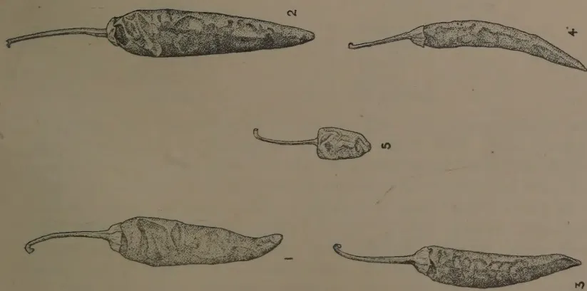
Block by Surve Plast, Ceylon.
FIG. 1.—THE DIFFERENT FORMS OF DRY CHILLIES GROWN IN CEYLON ()
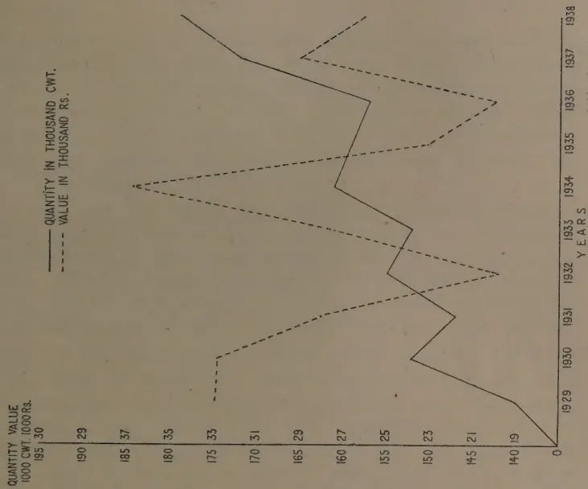
QUANTITY VALUE
1000 CWT. 1000 RS.
| Year | Quantity (1000 CWT.) | Value (1000 Rs.) |
|---|---|---|
| 1929 | 140.19 | 175.33 |
| 1930 | 145.21 | 175.33 |
| 1931 | 150.23 | 160.27 |
| 1932 | 155.25 | 160.27 |
| 1933 | 160.27 | 165.29 |
| 1934 | 165.29 | 170.31 |
| 1935 | 170.31 | 180.35 |
| 1936 | 175.33 | 185.37 |
| 1937 | 180.35 | 190.29 |
| 1938 | 185.37 | 195.30 |
Legend:
— QUANTITY IN THOUSAND CWT.
- - - VALUE IN THOUSAND RS.
Source: Book by Surve Plast, Ceylon.
FIG. 2.—CURVES SHOWING THE IMPORTS OF DRIED CHILLIES IN QUANTITY (CWT.) AND VALUE (RS.) TO CEYLON
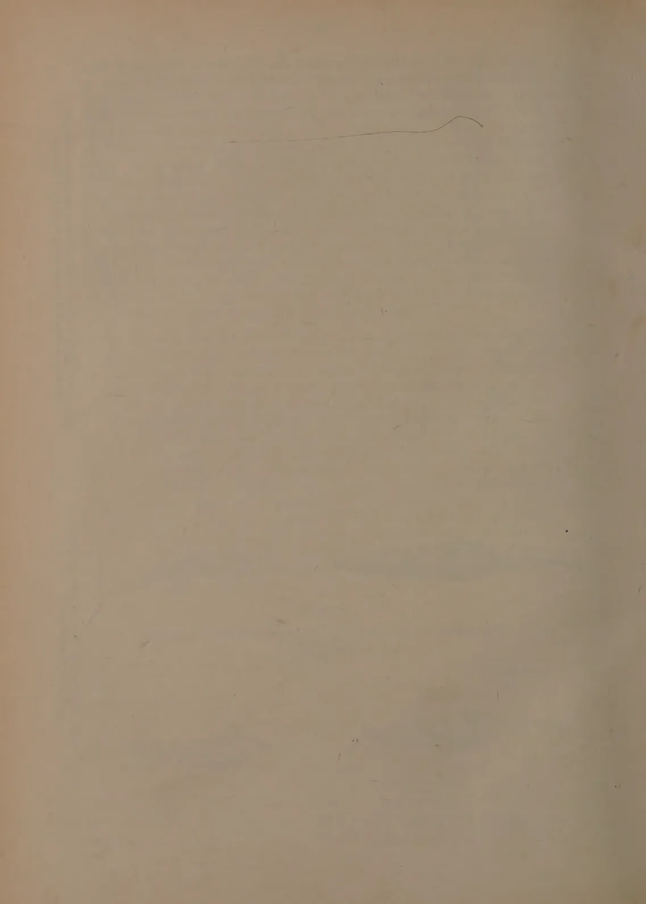
This image shows a blank, aged, light brown page, likely an endpaper or flyleaf from an old book. The paper has a slightly textured appearance with some minor discoloration and faint smudges. A thin, dark, slightly curved line is visible near the top center of the page, possibly a stray mark or a faint drawing. There is no text or other content on the page. 67The wanni chilli has been popular largely because it is reputed to grow better than other varieties under the conditions prevailing in chenas, where little or no attention is paid to the crop after it is sown.
In the northern part of Ceylon—the Jaffna Peninsula—where a well-irrigation system prevails, there are under cultivation several forms of the Dry chilli, chiefly of the var acuminatum which are known, generally, by the chief places around which they are grown. The important forms are var. acuminatum—Chankanai and Atchchuvely (Fig. 1, Nos. 1 and 3) and var. longum—Point Pedro (Fig. 1, No. 2).
Within the last few years, the Tuticorin, which is regarded as the best quality imported chilli, has proved to be a successful introduction both in the chena areas as well as in the Jaffna Peninsula. Not only is the high quality of the imported product maintained but the crop bears well and it is, therefore, replacing quickly all the local varieties of the Dry chilli grown in Ceylon.
In spite of the fact that a considerable quantity of dried chillies is raised annually in Ceylon—unfortunately no local figures of acreage or production are available—there is a large import trade in this condiment. The quantity and value of dried chillies annually imported into Ceylon from 1929 are shown in Fig. 2 and it will be observed that there is a gradual increase in the quantity but not in the value of the product imported.
The following is a list of the varieties known by their trade names in Ceylon, which are imported at various times of the year.
| Indian | Other countries. |
|---|---|
| Patna | .. Singapore |
| Gujerati | .. Rangoon |
| Nalchatty | .. Japan |
| Muladi | .. Java |
| Tuticorin | .. Hongkong |
These are all cultural forms of the var. acuminatum with the exception of Rangoon chillies. The first four varieties come from Bengal and are also referred to as Calcutta chillies. The Patna variety is the first to arrive in the year, and continues up to about March. The Gujerati follows next from about the end of January until April. Then comes Nalchatty from about May and after that Muladi chillies from about July until about the beginning of September after which a scarcity of Bengal chillies is felt on the market. From then, shipments are sometimes received from Rangoon and even Java, but the largest consignments come from the port of Tuticorin in South India, from which the name “Tuticorin chillies” is derived.
681. Patna and Gujerati.—The Patna chillies are reported to come from the districts of Patna and Allahabad in India. The pods (Pl. I., Fig. 3, No. 11*) though bright red in colour are too long. The Gujerati (Pl. I., Fig. 2, No. 1*) is a small pod and is grown in the Patna district.
2. Nalchatty and Muladi.—These chillies are reported to be grown in the Barisal district along the eastern coast of India. The Nalchatty (Pl. I., Fig. 3, No. 6*) is a shorter and stouter chilli with a brighter red colour than the Muladi (Pl. I., Fig. 3, No. 5*). It also has fewer seeds than the latter and the pedicels break away more easily from the pericarp. But both lack the pungency and flavour of the Tuticorin chilli.
3. Singapore.—These chillies are grown in Siam and are shipped from the ports of Bangkok and Singapore. (Pl. I., Fig. 3, No. 9*). They lack the colour and pungency of the Tuticorin.
4. Rangoon.—These are small chillies grown in Burma and exported from Rangoon. (Pl. I., Fig. 6, No. 5*).
5. Japan.—Long chillies of medium pungency grown in different parts of Japan are occasionally received in Ceylon. (Pl. I., Fig. 3, No. 7*).
6. Tuticorin.—As stated previously, the Tuticorin is the most important Dry chilli imported and introduced into cultivation in Ceylon. It is grown in the Tinnevelly district of South India, where there are two forms known as Sannam or Samba and Gundu. The former has a slender, medium-sized fruit (Pl. I., Fig. 3, No. 1*) while the latter has a much shorter conical-shaped fruit (Pl. I., Fig. 6, No. 6*). In this paper, the form with longer fruits will be referred to as Tuticorin. The Gundu sometimes comes into Ceylon from about the middle of August, while the Tuticorin is, generally, received from about September until the end of December. The size of the Tuticorin pod (Fig. 1., No. 4) is given in Table I. It has a bright red colour (Nopal red—Ridgway colour standard) with a smooth surface and is the most pungent of all the imported chillies. It gives a good flavour to curries and other preparations made from it and it possesses a firm pedicel. A strain of this chilli has been developed with a high lustre. For these reasons, it commands the highest price in the Ceylon market.
(c) The Green chilli.—Certain chillies are grown, particularly in the wet zone regions of the tropics, in which the fully developed green fruits are used when fresh for seasoning foods and as a vegetable. In New Mexico, according to Garcia (1908) the
* See Part I. of this paper in The Tropical Agriculturist, January, 1940.
69fruits are also used for canning. The fruits of the Green chilli vary in length and are, generally, stout and fleshy, owing to the presence of a thicker pericarp than in the Dry chilli forms.
This stype of chilli does not generally meet with a sufficient demand in Ceylon and the East to be of wide commercial importance owing to the fact that it cannot be stored for long without deterioration; it is, therefore, grown largely in the neighbourhood of market centres. Green chillies give a higher yield than fresh red chillies and villagers in Ceylon, generally, prefer to raise green chillies if prices are satisfactory. The sale of green chillies provides the growers with a small but more regular income from their crop, than from dried chillies. Production, however, must necessarily be limited as any extension in cultivation may result in overproduction and consequent fall in prices to an uneconomic level.
The typical Green chilli (Pl. II., Fig. 2, No. 2 *) in Ceylon is a form of the variety longum with a medium-sized stout fruit, a fairly thick pericarp and a high degree of pungency. This is the chilli which can be grown successfully in the wet zone areas; if, however, it is allowed to ripen and is then dried, the surface becomes wrinkled. In the dry zone, however, certain forms of the var. acuminatum can be used both as a Green and a Dry chilli, and, therefore, part of the crop is picked green and part ripe, although from the point of view of quality, as a Green chilli, these forms do not compare so favourably with the stouter fruits of the var. longum. The stage in which the Green chilli is picked can be recognized by a gloss on the surface of the fully-developed fruits, which when firmly pressed between the fingers yield a slight crackle.
Forms of the var. longum with much larger fruits (Pl. II., Fig. 1, No. 7) are also popularly grown, particularly in the wet zone, as a vegetable and are known locally as capsicums on account of their large size. They are, generally, mildly pungent and are eaten cooked whole or stuffed with chopped meat in curries. The Elephant's Trunk (Pl. II., Fig. 1, No. 7 *) is the commonest form cultivated in Ceylon.
(d) Pimento.—The term Pimento is now generally used, particularly in U.S.A., for canning peppers. Erwin (1932) states that according to a communication received by him from Knight, the term was acquired in connection with canned peppers imported from Spain into U.S.A. (Pimento being Spanish for pepper) and referred chiefly to conical-shaped fruits with a very thick pericarp. He adds that the anglicized form Pimento should be used for this type of pepper instead of the allspice (Pimento officinalis) on the grounds of priority, and the name
* See Part I, of this paper in The Tropical Agriculturist, January, 1940.
70allspice retained as the common name for the latter, and that the term now refers to forms of two varieties of peppers, viz., var. cuneatum with large conical-shaped fruits (Pl. I., Fig. 2, No. 17 *) as exemplified by the form Perfection and var. oblatum with oblate-shaped fruits, an example of which is Sunnybrook (Pl. II., Fig. 3, No. 5 *). The conical-shaped fruits of such forms as Perfection and Sweet Meat Glory are, however, gaining more favour as a canned pepper of the Pimento type, than the oblate-shaped fruits. The pimentos have a thick pericarp, which is quite smooth, and a tough epicarp which can be easily peeled off after scalding. In New Mexico, an improved variety of the native chilli known as No. 9 was made by Garcia (1921) for canning purposes. The native chillies there are irregular in form, more or less wrinkled, with a thin pericarp and a depression at the calyx end. The improved variety was bred for the purpose of having a smooth, fleshy, tapering, and shoulderless fruit which reduces peeling costs prior to canning.
U. S. A. is now the chief country which undertakes canning of peppers and in Georgia State alone over 15,000 acres are under cultivation supplying 10,000 tons of peppers to the canneries. In middle Georgia, there is a cannery operating with a capacity of 150-200 tons of Pimento per day of 10 hours.†
(e) Paprika.—True Paprika of the highest grade is produced only in the southern part of the great plain around the districts of Szeged and Kalocsa in Hungary and is of a bright red colour, slightly pungent as well as sweet and very aromatic. The paprika grown in Szeged district is different in aroma to that from the Kalocsa district, owing to differences of soil and climate (Redgrove 1934). Paprika is also cultivated in Spain, the Hungarian and Spanish paprikas being defined by the U. S. Food Standards as possessing the special flavour and pungency of the Paprika grown in the country by which each is named. Spanish Paprika is not so highly esteemed as Hungarian Paprika, as it is non-pungent and inferior in flavour. According to Young and True (1913) Hungarian and Spanish Paprikas belong to two different forms of pepper. Hungarian Paprika fruits (Pl. II., Fig. 4., No. 5 *) are about 4 to 5 in. long.
In Hungary, Paprika is largely consumed whole, but a variety of dishes are made from it, one being a kind of stew known as goulash. Paprika sauce is also held in great esteem. In Spain, Paprika is used as a vegetable in salads and for stuffing with olives, &c. It may be eaten raw but is, generally, grilled after removal of the seeds and stuffing with forcemeat. Its chief use according to Redgrove (1933) is as culinary colouring matter.
* See Part I. of this paper in The Tropical Agriculturist, January, 1940.
† Personal communication from H. L. Cochran, Associate Horticulturist, Georgia.
This image is a scan of a blank page. The background is a uniform light beige or tan color. There are a few very small, dark specks scattered across the surface, which appear to be scanning artifacts or dust particles. No text, lines, or other graphical elements are present.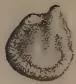
BIRD
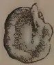
TABASCO
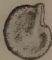
TUTICORIN
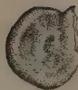
WORLD BEATER
BLOCK BY SURVEY DEPT. Ceylon.
FIG. 3.—SEEDS OF DIFFERENT CHILLIES ()
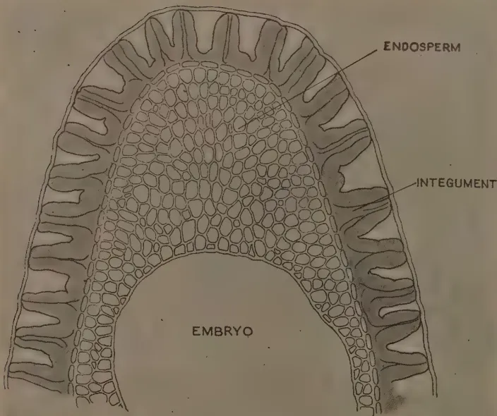
A detailed botanical illustration of a cross-section of a Tuticorin chili seed. The diagram shows a semi-circular structure with a large, central, U-shaped cavity labeled 'EMBRYO'. The cavity is surrounded by a thick, multi-layered outer shell. The innermost layer of this shell is labeled 'ENDOSPERM' and consists of numerous small, rounded cells. The outermost layer is labeled 'INTEGUMENT' and is characterized by a series of vertical, wavy ridges or folds. The entire structure is drawn with fine lines and stippling to indicate texture and shading.CROSS SECTION OF
TUTICORIN CHILI SEED
X250
Block by Survey Dept. Ceylon.
FIG. 4. ()
71There are five grades of Hungarian Paprika marketed under Government supervision and governed by decrees of the Hungarian Ministry of Agriculture. Arranged in ascending order of pungency they are:—
| A. Sweet | .. | 1. Delicate noble sweet | .. | 2. Noble sweet |
| B. Hot | .. | 1. Near Sweet | .. | 2. Rose |
| 3. Hot |
(f) The Bell Pepper.—According to Erwin (1932), the name Bell pepper is the historic name for this group which includes the large non-pungent fruits with thick pericarps, belonging to the varieties grossum and oblatum.
They are grown more extensively in Europe and U. S. A., than in the tropical regions of the world, because the demand for mild peppers in the tropics is not as great as it is for pungent peppers and also because these peppers thrive better in temperate and sub-tropical climates where they are less susceptible to sun scald than in warm climates.
They are used in salads and for stuffing either raw or cooked in the mature green or red ripe stage. They are thus gathered when in the mature green, partly red or fully red stages.
The cultivated forms have large fruits, about 3 to 6 in. long and about 3 to 4 in. wide. They are also called Bullnose peppers from the general shape of the apex. They are squarish, sub-truncate to truncate and deeply furrowed, with 3 to 4 loculi. The calyx is flattened and generally seated in a depression at the base of the fruit. The pericarp is as much as 1 cm. thick, while the pedicel is short, stout and curved. The most popular forms are Ruby King, Chinese Giant, California Wonder and World Beater.
(a) Morphology.—The seed is discoidal in shape, somewhat flattened and smooth or subscabrous with a deep chalazal depression (Fig. 3). The colour varies from cream-yellow to reddish-yellow in different forms, old seeds becoming brown. They are attached to the placenta in compact rows, chiefly at the basal end of the fruit. The embryo is peripheric, embedded in a copious endosperm and the two cotyledons lie closely pressed together.
The seed coat is derived from a single integument, the cells of which, according to Cochran (1938) who confirmed the earlier findings of Hanausek, Hartwich and Souèges, show radial elongation through degeneration of the periclinal walls and thickening of the anticlinal walls (Fig. 4). The thickenings decrease towards the surface and through disintegration of
* See Part I. of this paper in The Tropical Agriculturist, January, 1940.
72parts of the integument, small depressions appear on the surface of the seed, giving it a pitted appearance. In transverse section, the thickenings appear irregular and wavy in outline.
The inner epidermal layer of the integument according to Cochran (1928) probably aids in nourishing the embryo and persists until the cotyledons are well differentiated. Although the endosperm becomes partly absorbed, a large portion of it remains at maturity (Fig. 4). It consists of polygonal cells filled with aleurone grains.
The size of the seed varies from about 2.5 mm. (longest diameter) in the Bird chilli to about 5 mm. in the large Bell pepper, the increase in the size of the seed being correlated with increase in the size of fruit. The number of seeds per fruit varies considerably with different forms. The wanni chilli contains a large number of seeds in proportion to the size of the fruit or, in other words, its percentage seediness as
determined by the is high. This is one of the disadvantages of this form as a Dry chilli, because a high percentage seediness is not favoured in households where the pods after slight roasting are ground on a hand stone for the preparation of curry powder. The flavour of the pods is somewhat masked when the percentage of seeds present in each pod is high. In Table II the number of seeds per pod and the percentage seediness of the pods (dried fruits) of the wanni and Tuticorin chillies are given and it will be seen that the former has a significantly higher percentage seediness than the latter.
TABLE II.Showing the Percentage Seediness of the Pods of the Ceylon Wanni and Tuticorin Chillies.
| Variety. | Mean number of seeds per pod. | Percentage seediness of the pods. |
|---|---|---|
| Wanni .. .. | 53 9.35 | 68.24 4.96 |
| Tuticorin .. .. | 59 12.92 | 49.76 5.21 |
| Difference for n=24 and P= t=2.064 .. .. |
6 12.43 | 18.48 7.194 |
(b) Seed Disinfection.—The disinfection of Capsicum seeds against certain disease-producing organisms present on the surface of the seeds such as Cercospora leaf spot and the fruit diseases caused by Vermicularia capsici Syd., Gloeosporium piperatum E. & E. and Colletotrichum nigrum E. & H. is an effective and inexpensive measure for reducing losses from these diseases. Capsicum seed, however, is more sensitive to treatment with disinfectants than a number of other seeds (Webber 1922, Higgins 1923 and 1934) and this sensitiveness is
This image is a scan of a blank page. The background is a uniform light beige or tan color. There are a few very small, dark specks scattered across the surface, which appear to be scanning artifacts or dust particles. No text, lines, or other graphical elements are present.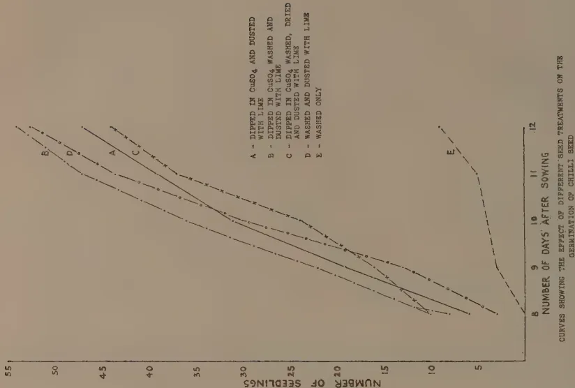
NUMBER OF SEEDLINGS
NUMBER OF DAYS AFTER SOWING
A - DIPPED IN AND DUSTED WITH LIME
B - DIPPED IN WASHED AND DUSTED WITH LIME
C - DIPPED IN WASHED, AND DUSTED WITH LIME
D - WASHED AND DUSTED WITH LIME
E - WASHED ONLY
| NUMBER OF DAYS AFTER SOWING | A | B | C | D | E |
|---|---|---|---|---|---|
| 9 | 4.5 | 4.2 | 4.0 | 3.8 | 10.0 |
| 10 | 3.8 | 3.5 | 3.2 | 3.0 | 7.0 |
| 11 | 3.2 | 2.8 | 2.5 | 2.2 | 5.0 |
| 12 | 2.8 | 2.5 | 2.2 | 2.0 | 3.0 |
CURVES SHOWING THE EFFECT OF DIFFERENT SEED TREATMENTS ON THE GERMINATION OF CHILLI SEED
Block by Survey Dept. Capron
FIG. 6
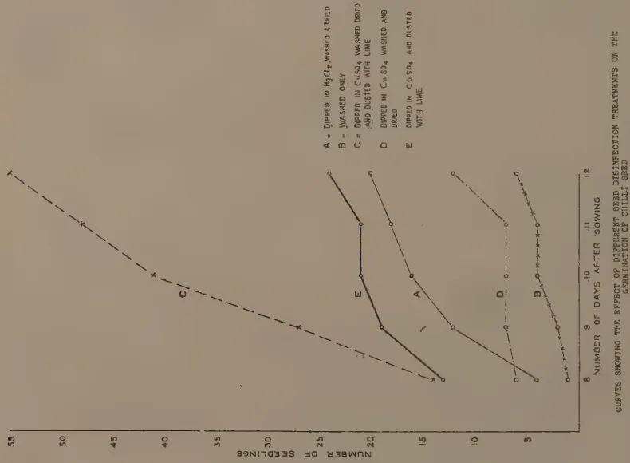
NUMBER OF SEEDLINGS
NUMBER OF DAYS AFTER SOWING
A = DIPPED IN WASHED & DRIED
B = WASHED ONLY
C = DIPPED IN WASHED DRIED AND DUSTED WITH LIME
D = DIPPED IN WASHED AND DRIED
E = DIPPED IN AND DUSTED WITH LIME
| NUMBER OF DAYS AFTER SOWING | A | B | C | D | E |
|---|---|---|---|---|---|
| 9 | 4.0 | 4.0 | 4.0 | 12.0 | 20.0 |
| 10 | 3.5 | 3.5 | 3.5 | 10.0 | 18.0 |
| 11 | 3.0 | 3.0 | 3.0 | 8.0 | 15.0 |
| 12 | 2.5 | 2.5 | 2.5 | 6.0 | 12.0 |
CURVES SHOWING THE EFFECT OF DIFFERENT SEED DISINFECTANT TREATMENTS ON THE GERMINATION OF CHILLI SEED
Block by Survey Dept. Capron
FIG. 5
73greater with dried than fresh seed according to Higgins (1934). For this reason, he has suggested that fresh seed should be disinfected soon after picking of the fruit and then dried for use later. The usual disinfectants recommended for Capsicum seed are mercuric chloride () and copper sulphate () while proprietary organic mercury compounds are also held to be useful (Webber 1922) and (Higgins 1934). These authors consider (0.1 per cent.) to be very effective but Higgins adds that it is also liable to cause injury to the seed. With regard to , the addition of lime is held to be necessary, in order to neutralize the effects of any free copper and Higgins (1923) states that, where lime was withheld, root development was affected. He recommends that fresh seed should be dipped in solution (1 oz. to 2 quarts of water) for 5 minutes and after draining and then dipping in lime water it should be spread out to dry, while dried seed should be soaked in water for 6 to 12 hours before dipping in , drained and rolled in air-slaked lime, the seed being planted immediately afterwards.
An experiment was carried out to examine the effect on germination of and disinfectants. Well-dried seed of the Tuticorin chilli was used and sown in Petri dishes of about 10 cm. diameter, in each of which a wad of Johnson and Johnson's absorbent cotton wool, cm. thick, was placed evenly and moistened with 20 cc. of water. Previous tests on the germination of seed in porous unglazed dishes immersed in water, with and without clean quartz sand, proved unsuccessful. Six Petri dishes with their lids removed were used for each treatment and in each 16 seeds were placed. Every three days 10 cc. of water were added to each dish to replace loss from evaporation. The following were the treatments :—
Records of the number of seedlings, on the basis of the appearance of the unfolded cotyledons were made from the 8th to the 12th day and the results are shown graphically in Fig. 5. An analysis of variance for the results on the 12th day are given in Table III.
74TABLE III.Analysis of Variance for Germination.| DF | sum of squares | variance | F | 1 per cent. point. | |
|---|---|---|---|---|---|
| Between treatments .. | 4 .. | 240.53 .. | 60.13 .. | 17.9.. | 4.18 |
| Within treatments==error | 25 .. | 84.17 .. | 3.3668 .. | ||
| Total .. | 29 .. | 324.7 .. | |||
| Means of treatments. | General Mean. | Sig. diff. | |||
| A | B | C | D | E | |
| 3.3 | 1 | 9.16 | 2 | 4 | .. 3.89 .. 2.18 |
The results show that treatments A and D are not significantly better than the control B, while E and C are significantly better. This means that copper, only in the presence of lime, stimulated germination. When the excess copper was washed off before the addition of the lime, the germination was better than when the lime was added immediately after dipping in copper.
In a second experiment, the following treatments were adopted :—
The seed was sown in the same way as before and the results are shown graphically in Fig. 6 of the number of seedlings which appeared between the 8th and 12th day. An analysis of variance for the results obtained on the 12th day is shown in Table IV.
TABLE IV.Analysis of Variance for Germination.| DF | sum of squares. | variance | F | 1 per cent. point. | |
|---|---|---|---|---|---|
| Between treatments .. | 4 .. | 127.54 .. | 31.89 .. | 6.82 .. | 4.18 |
| Within treatments==error | 25 .. | 116.84 .. | 4.67 .. | ||
| Total .. | 29 .. | 244.37 .. | |||
| Means of treatments. | General Mean. | Sig. diff. | |||
| A | B | C | D | E | |
| 7.83 | 9 | 7.17 | 8.83 | 3.33 | .. 7.23 .. 2.55 |
THE EFFECT OF THE PH VALUE ON GERMINATION
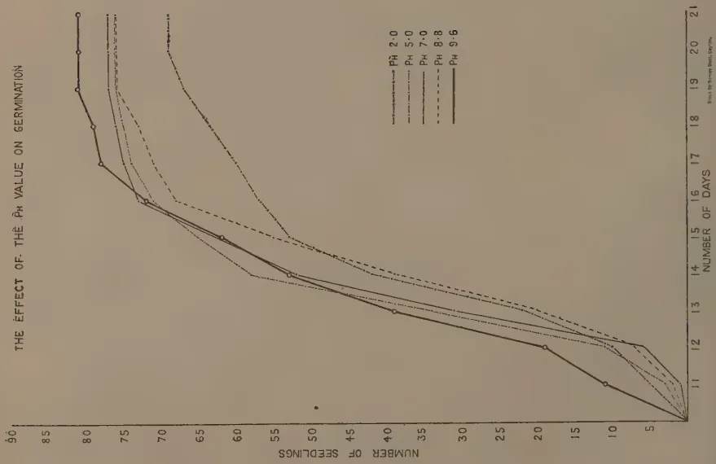
This line graph illustrates the effect of pH on germination. The y-axis represents the 'NUMBER OF SEEDLINGS' from 0 to 90. The x-axis represents the 'NUMBER OF DAYS' from 11 to 21. Five data series are shown for different pH levels: pH 2.0 (solid line with circles), pH 5.0 (dashed line), pH 7.0 (dotted line), pH 8.8 (dash-dot line), and pH 9.6 (solid line). All series start at 0 seedlings at day 11. pH 2.0 shows the fastest germination, reaching approximately 80 seedlings by day 12 and 85 by day 13. pH 5.0 reaches about 75 by day 13. pH 7.0 reaches about 70 by day 13. pH 8.8 reaches about 65 by day 13. pH 9.6 shows the slowest germination, reaching about 60 by day 13 and 65 by day 14. By day 21, all pH levels have reached a plateau of approximately 80-85 seedlings.
| Number of Days | pH 2.0 | pH 5.0 | pH 7.0 | pH 8.8 | pH 9.6 |
|---|---|---|---|---|---|
| 11 | 0 | 0 | 0 | 0 | 0 |
| 12 | 10 | 10 | 10 | 10 | 10 |
| 13 | 80 | 75 | 70 | 65 | 60 |
| 14 | 85 | 78 | 72 | 68 | 65 |
| 15 | 85 | 80 | 75 | 70 | 68 |
| 16 | 85 | 82 | 78 | 72 | 70 |
| 17 | 85 | 83 | 80 | 75 | 72 |
| 18 | 85 | 84 | 82 | 78 | 75 |
| 19 | 85 | 85 | 83 | 80 | 78 |
| 20 | 85 | 85 | 84 | 82 | 80 |
| 21 | 85 | 85 | 85 | 83 | 82 |
FIG. 7
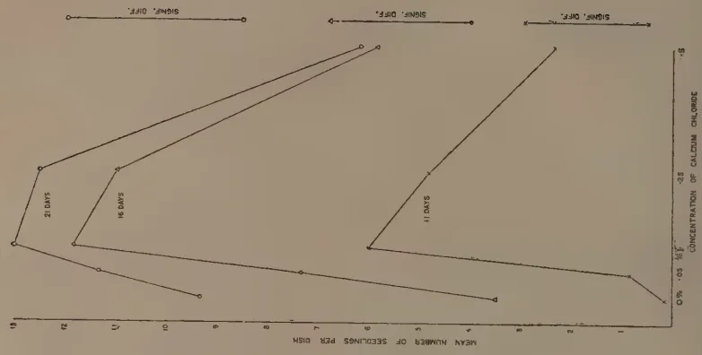
This line graph shows the effect of calcium chloride concentration on germination. The y-axis is 'MEAN NUMBER OF SEEDLINGS PER DISH' from 0 to 10. The x-axis is 'CONCENTRATION OF CALCIUM CHLORIDE' with values 0%, 0.05%, 0.1%, and 0.5%. Three data series are shown for 11 days, 16 days, and 21 days. For all three time points, the number of seedlings increases with calcium concentration, peaking at 0.5%. The 21-day series shows the highest germination, reaching about 9.5 seedlings per dish at 0.5% concentration. The 16-day series reaches about 7.5, and the 11-day series reaches about 5.5.
| Concentration of Calcium Chloride | 11 Days | 16 Days | 21 Days |
|---|---|---|---|
| 0% | 0 | 0 | 0 |
| 0.05% | 1.0 | 2.0 | 3.0 |
| 0.1% | 2.0 | 4.0 | 6.0 |
| 0.5% | 5.5 | 7.5 | 9.5 |
FIG. 8.—GERMINATION ON THREE DIFFERENT DAYS AT VARYING CONCENTRATIONS OF CALCIUM
75The results show that the treatments A-D are significantly better than the control E, but are not better than each other. As lime alone appeared to stimulate germination, it indicated either a direct effect of the calcium ion or of the pH value of the medium due to the presence of the lime. On the 12th day, when the experiment was terminated, the water in the wads of cotton wool in the dishes of each series was squeezed out and the pH value determined. The results are shown in Table V.
TABLE V.
Giving the pH Value of the Water in which Chilli Seed was germinated after different Disinfection Treatments.
| Treatment. | .. | pH value. |
|---|---|---|
| A | .. | 7.3 |
| B | .. | 7.8 |
| C | .. | 7.4 |
| D | .. | 8.2 |
| E | .. | 4.4 |
Apparently, the better germination observed in series A-D in which lime was dusted on the seed prior to sowing was due to the higher pH value of the water, resulting from the presence of the lime, while the poorer growth of the control was the effect of the highly acid condition of the water, probably due to the excretion of organic acids from the root tips during germination.
In order to test this view, a series containing the following pH values were prepared by the addition of small quantities of concentrated to a 0.3 per cent. solution which is well-buffered:—2.0, 5.0, 7.0, 8.8 and 9.2. Six Petri dishes were used for each series but instead of cotton wool as in the previous experiments, finely-sifted coir dust, previously moistened with distilled water which was found to be more satisfactory, was placed in each dish to its surface level. The lids were removed and 16 seeds of the Tuticorin chilli sown about 3 mm. below the surface in each dish. Soon afterwards, 25cc. of the particular solution for each treatment were added to each dish respectively in the series. Records of the number of seedlings which appeared are shown graphically in Fig. 7 and the results on the 18th day after sowing shown in the analysis of variance in Table VI.
TABLE VI.
Analysis of Variance for Germination.
| DF | sum of squares. |
variance | F | 5 per cent. point. |
|
|---|---|---|---|---|---|
| Between treatments .. | 4 .. | 21.57 .. | 5.39 .. | 2.5 .. | 2.87 |
| Within treatments=error | 25 .. | 53.80 .. | 2.152 .. | ||
| Total .. | 29 | 75.37 |
The treatments are not significant.
76This experiment indicates that the pH value of the medium has no effect on germination. It remained, therefore, to examine the effect of Ca on germination and the following concentrations of were then tested :—
The same technique as in the previous experiment was adopted and in Figure 8, the effect of the concentration of Ca on the germination on three different days is shown, with the significant differences obtained for each. It will be seen that the optimum concentration of lies at about 0·1 per cent. and these experiments thus indicate that the stimulating effect of seed disinfection with and lime is due to the presence of the Ca ion.
(c) Germination.—When conditions become favourable for germination, a slight swelling of the seed coat takes place, followed by the protrusion of the radicle from the micropyle (Fig. 9, No. 1). It curves downwards (Fig. 9, No. 2) and when it reaches a length of about 5 to 10 mm., the hypocotyl begins to develop and shows a bend. This is the first visible sign of germination above the surface of the soil. The hypocotyl then elongates and straightens out, while the cotyledons which are epigeal become gradually drawn out of the seed coat (Fig. 9, No. 7) and after emerging together they separate from each other, until each assumes a more or less horizontal position. Sometimes, the cotyledons find difficulty in being drawn out of the seed coat owing to a twist in their position within the seed coat and after remaining partially extruded they may eventually die. At other times, the seed coat becomes attached to the cotyledons at their tips (Fig. 9A) and later persists at the tip of one of the cotyledons, (Fig. 9B) but eventually drops. When the cotyledons are quickly extruded, they appear yellowish but soon turn green in the presence of diffused light. They are lanceolate or ovate-lanceolate while the true leaves are ovate-lanceolate or broadly ovate.
At higher temperatures, germination is more rapid. In nursery beds in the dry zone areas of Ceylon where the temperature ranges from 80° to 90°F. in the shade, the hypocotyl bends become generally visible on the 4th and 5th days and the cotyledons appear unfolded on the 6th and 7th days. About the 12th day, the first pair of leaves appears. Cochran (1936) has studied the relationship between temperature and germination.
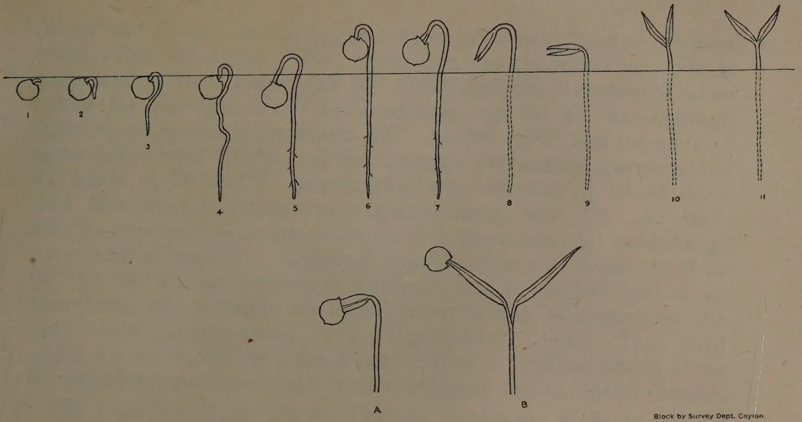
The diagram illustrates the germination stages of chilli seeds. Stages 1-9 show the seed and radicle emerging from the seed coat. Stages 10-11 show the cotyledons and the first true leaves. Stages A and B show the seed with a more developed cotyledon and the first true leaves respectively. The seeds are shown above a horizontal line representing the soil surface.
Block by Survey Dept. Ceylon.
FIG. 9.—SHOWING THE DIFFERENT STAGES IN THE GERMINATION OF CHILLI SEED
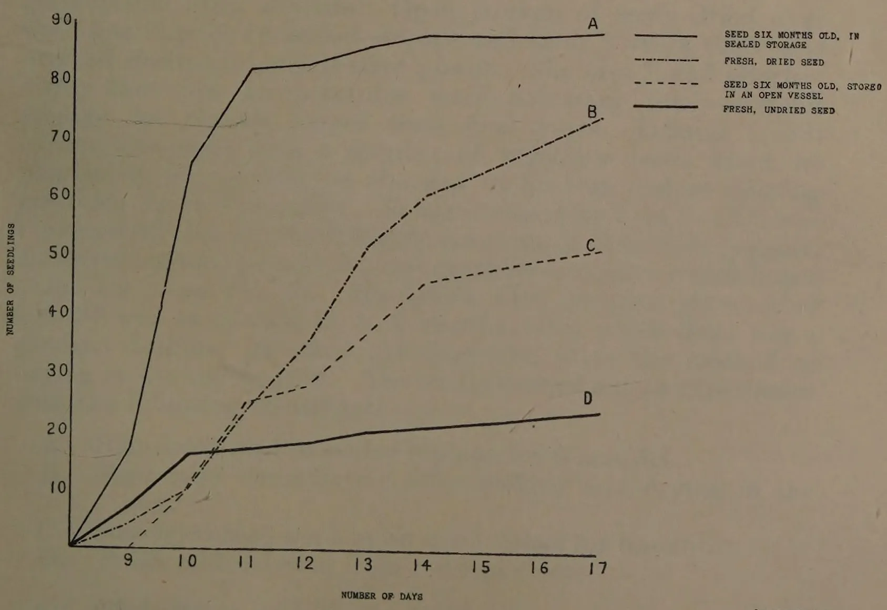
The graph plots the number of seedlings (Y-axis, 0 to 90) against the number of days (X-axis, 9 to 17). Four curves are shown, representing different storage conditions:
| Number of Days | Curve A (Sealed) | Curve B (Dried) | Curve C (Open) | Curve D (Undried) |
|---|---|---|---|---|
| 9 | 0 | 0 | 0 | 0 |
| 10 | 18 | 10 | 10 | 16 |
| 11 | 82 | 25 | 25 | 16 |
| 12 | 83 | 35 | 28 | 18 |
| 13 | 85 | 52 | 35 | 19 |
| 14 | 88 | 60 | 45 | 20 |
| 15 | 88 | 65 | 46 | 21 |
| 16 | 88 | 70 | 48 | 22 |
| 17 | 88 | 73 | 50 | 23 |
Block by Survey Dept. Ceylon.
FIG. 10.—CURVES SHOWING THE VIABILITY OF SEED UNDER DIFFERENT STORAGE CONDITIONS
This image is a scan of a blank page. The background is a uniform light beige or tan color. There are a few very small, dark specks scattered across the surface, which appear to be scanning artifacts or dust particles. No text, lines, or other graphical elements are present. 77At 40°–50°F. he found no germination of World Beater peppers even after 45 days. The minimum temperature at which germination took place was 50°–60°F. and the number of days taken for emergence of the seedlings was 30–31, the average percentage germination being 59. At 60°–70°F. the number of days taken was 19–20 and the average percentage germination 72 while at 70°–80°F. germination was effected in 10–11 days and the average percentage germination was 78. At 90°–100°F. germination took place in 5–6 days and the percentage germination was 74. Although germination was most rapid at 90° to 100°F. no statistical analysis was presented and it is, therefore, not possible to conclude at which temperature the percentage germination was significantly best. The Bird chilli, however, differs from other chillies in taking about 10 to 12 days longer to germinate under ordinary conditions in Ceylon.
(d) Viability of the Seed.—Certain vegetable seeds require a period of dormancy before they can germinate satisfactorily. Barton (1935) tested the germination of pepper seeds at the following intervals :—Freshly picked, 1, 2 and 3 years storage. She found that after 2 years the seed lost its germination considerably. She reports that, when air-dried seeds were stored in open containers, their viability was maintained for 2 years, but when kept sealed viability was lost within a year. When dried over CaO and sealed there was a slight decrease in germination after 3 years. Open storage of seeds dried over CaO was inferior to sealed storage and after 3 years there was marked decline in germinative power. She also found (Barton 1938) that low temperatures were necessary for successful storage for periods longer than four years. Odland (1938) carried out tests with a number of vegetable seeds which he planted in lots of 100, on the day of harvest and at varying intervals up to 6 months. No significance for F at was obtained by him for the different intervals of time with peppers, while cucumbers, pumpkins, and musk melons gave a significant value for F at . He found that peppers germinated equally well at all ages up to 6 months, after which there was a gradual decline. He does not, however, state the method of drying or storing the seed. The writer carried out an experiment with the following treatments :—
Six Petri dishes with finely-sifted coir dust were used as in the previous germination experiments reported in this paper
78and the seed was disinfected in solution (1.25 per cent). for 5 mins. and dusted with lime. Counts of the number of seedlings were made and the results are shown graphically in Fig. 10 and an analysis of variance for the 13th day given in Table VII.
TABLE VII.Analysis of Variance for Germination.| DF | sum of squares. | variance | F | 1 per cent. point. | |
|---|---|---|---|---|---|
| Between treatments .. | 3 .. | 413.78 .. | 137.93.. | 30 .. | 4.94 |
| Within treatments==error | 20 .. | 91.50 .. | 4.57 | ||
| Total .. | 23 | 505.28 |
| Means of treatments. | General mean. | Sig. diff. | |||
|---|---|---|---|---|---|
| A | B | C | D | .. | .. |
| 14.33 | 8.67 | 6.17 | 3.0 | .. 8.04 | .. 3.5 |
It will thus be seen that contrary to Odland's results, sun-dried seed germinates much better after a 6 months period of storage than soon after picking, while fresh undried seed germinates poorly.
(To be continued.)
79M. P. D. PINTO,
INSPECTOR, CUSTOMS PLANT FUMIGATORIUM, COLOMBO,
AND OFFICER SUPERINTENDING LAC CULTIVATION
IN CEYLON
VARIOUS attempts have been made in the past to cultivate the Indian lac insect, Laccifer lacca, Kerr., in Ceylon but without success. This has also been the experience of certain other countries such as Egypt, Japan, and Malaya. Recent observations made in Ceylon indicate that it may not be possible to cultivate this introduced insect in the Island, chiefly owing to the death of the young larvae following the degeneration of the insect which occurs in this country shortly after its introduction from India and also on account of the damage caused to the insect by its natural enemies.
No precise information has been available as to the cause, or causes of the devitalization of the insect in Ceylon but, rightly or wrongly, it has been attributed to unfavourable climatic conditions. Although climate, undoubtedly, has an important controlling influence upon the development of an insect species, mortality of a similar nature to that associated with this species in Ceylon has been observed to occur in certain parts of India where the climate is known to be favourable to the insect. The failure to establish this insect in Ceylon may, therefore, be due to some factor which has not previously been considered or to a combination of unfavourable conditions.
Before finally abandoning the attempt to grow lac in Ceylon it has been considered desirable to determine, if possible, the cause of the mortality of the lac larvae and to ascertain if this could be prevented or at least minimized.
It was thought possible that one, if not the main, cause of the devitalization of the insect has been the repeated cutting at each season of brood lac a few days prior to the commencement of swarming. It is a recognized fact that premature cutting of brood lac is extremely harmful. If it is cut too early the vitality of the larvae is adversely affected as they are
80deprived of nourishment through the mother who is cut off from her own food supply. Brood lac should, therefore, be cut as late as possible.
To determine whether the repeated and possibly premature cutting of brood lac has been a cause of failure or not, trials were undertaken at Nikaweratiya, Dambulla and Angoda (Katugas-tota), the main centres where the earlier experiments were conducted. In these trials the system of cutting brood lac a few days prior to the emergence of larvae was abandoned and the lac was cut a few days (about four) after the actual emergence of the larvae had begun. Natural infection (i.e., allowing the insects to swarm in situ and settle on other available branches of the same tree) was also tried.
In undertaking these trials, certain obvious objections to their adoption were not overlooked. One of the most important of these is the loss of a certain number of larvae which are unable to find a suitable place for settlement but this loss should not be serious if cutting is not unduly delayed. All larvae do not swarm simultaneously. Swarming continues for about three weeks so that the loss need not be very great. The object should be to obtain healthy and vigorous larvae which have not been weakened by premature cutting of the branches from which their mothers obtain nourishment.
The main objection to natural infection is that it is believed to encourage natural enemies of the lac insect. To what extent this is the case it is difficult to say. Even where artificial infection alone is practised, predators and parasites cause very heavy losses, and, indeed, instances are known where an entire crop has been lost owing to the predators. During certain seasons very extensive damage by enemies in certain localities must be expected irrespective of the method of infection adopted. Such outbreaks of lac predators and parasites are due to environmental factors, including an abundance of food, momentarily advantageous to their development or a decrease in the number of their own enemies.
To make observations on these various points the main experiments could not be undertaken until a supply of brood lac was received from India. This was not possible in January/February, 1938, owing to a scarcity of brood material in the Ranchi district but the Indian Lac Research Institute, Namkum, Ranchi, was able to send a supply in the following season.
The consignment of brood lac was received in Ceylon on June 17, 1938, in fairly good condition. It was of the kusum
81(kon) strain and consisted of 208 lb. The material was inoculated on the previously pruned kon trees (Schleichera trijuga) on June 17 and 18, 1938, at Inamalawa (Dambulla) and Nikaweratiya, respectively.
The brood material was of second grade quality, and on receipt the insects were found to have commenced emergence; about 118 lb. were tied on to eight kon trees at Inamalawa and the balance (90 lb.) was used for infecting five kon trees at Nikaweratiya. Later examination showed that settlement of larvae at both the centres was satisfactory and the subsequent development was good. A fair amount of damage, which was to be expected, was caused by predators. The weather during the period of development was drier than normal.
Larvae commenced to emerge on November 15, 1938. The crop at Inamalawa was harvested on November 18, 1938, i.e., five months after inoculation. The encrustations were good and considering the inferior quality of the brood lac received from India the crop was satisfactory. A yield of 178 lb. was obtained excluding an estimated amount of 28 lb. left uncut on the trees for natural infection. The total yield would, therefore, be about 207 lb. or a little over fold.
Of the 178 lb. harvested, 104 lb. were transferred to six other kon trees at Inamalawa while the balance (74 lb.) was removed to Mirisgonioya (Dambulla) and used for inoculating four kon trees. All these trees had been previously pruned.
The crop at Nikaweratiya was harvested on November 20, 1938; 82 lb. were cut from the trees and about 36 lb. were left uncut for natural infection. The total yield was, therefore, estimated to be about 118 lb. or slightly more than 1-fold. The crop gathered was put on to five kon trees at the same centre.
Heavy infestations by red ants (Oecophylla smaragdina) and a black ant Kodaya, S., (Cremastogaster sp.) made it very difficult for the labourers to harvest the crop on some trees.
The settlement of larvae at both centres was very good. The crop at Nikaweratiya developed most satisfactorily. At Inamalawa it was heavily attacked, during the later stages, by predacious caterpillars. Observations also indicated that the black ant Kodaya, S., (Cremastogaster sp.) may also possibly be an enemy of the lac insect by causing the death of lac larvae soon after settlement. The condition of the crop at Mirisgonioya was good. The weather during the period of development of the insects was normal.
The lac encrustations formed very well at all the centres, particularly at Nikaweratiya. Emergence of larvae commenced
82on April 24, 1939, at Nikaweratiya and two days later at Dam-bulla, the life-cycle of the insect thus occupying slightly over five months.
The crop at Nikaweratiya was harvested on April 28, 1939. It was most satisfactory. From the artificially-infected trees 389 lb. were harvested representing a yield of nearly 5-fold. From two naturally-infected trees where about 20 lb. were left uncut it was possible to gather 168 lb. or over 8-fold. The crop on the third naturally-infected tree was poor and was left uncut.
Of the brood lac harvested, 517 lb. were transferred to twelve other kon trees at the same centre. Most of these had been previously pruned. Only two trees which carried crops this season were utilized for natural infection.
About 40 lb. were removed to Angoda (near Katugastota) and were given to lac workers for inoculation there. Of this quantity 10 lb. had been sent by them to Ratnapura and the remainder (30 lb.) was used for infecting three kon trees at Angoda. These trees had been previously pruned and possessed branches of suitable growth.
The crop at Inamalawa was harvested on April 30, 1939. It was poor owing to the serious injury wrought by the predators in the later stages and by the black ant (Cremastogaster) on a few trees in the early stages. Only 42 lb. of second-grade brood lac was harvested from a single tree. About 24 lb. of second-grade lac on six other trees were left uncut. The 42 lb. harvested were transferred to another tree at the same centre.
At Mirisgonioya the crop was more satisfactory. It was harvested the following day and amounted to about 142 lb. or nearly 2-fold including about 12 lb. left uncut for natural infection. The damage by natural enemies here was not so significant as at Inamalawa.
The harvested crop of 130 lb. was transferred to five kon trees at the same centre. All these trees had been pruned about -3 years earlier.
The settlement of larvae on all the infected trees in the various centres, viz., Nikaweratiya, Mirisgonioya, Inamalawa and Angoda, was very good. The later development of the insects was also very satisfactory, indicating that there had been no devitalization. Shortly afterwards, however, an abundance of predators was noticed in all the localities except at Angoda, where there had been no lac immediately preceding the present crop. As the lac insects developed, the number of enemies rapidly increased, causing very extensive damage resulting in
83very poor crops except at Angoda, where it was excellent. The weather during the development of the crop was drier than normal.
Larvae commenced to emerge at Nikaweratiya and Dam-bulla on October 4, 1939, the life-cycle thus occupying nearly five and a half months. At Angoda emergence was delayed till October 20, and the insect thus completed its development in nearly six months.
The crop at Nikaweratiya was harvested on October 9, 1939. Owing to the heavy damage by enemies, most of the lac was of second-grade quality and not suitable for brood purposes. From the artificially-infected trees only 148 lb. were cut compared with 517 lb. inoculated. From naturally-infected trees an additional crop of 6 lb. was gathered. A fairly good crop on one tree could not be collected owing to a heavy infestation by red ants which attacked the labourers. Generally, the damage caused by predators was no greater on natural infestations than on the others. In fact, some of the lac encrustations on the naturally-infected trees were better formed than those on the artificially-infected trees.
The 154 lb. harvested were transferred to ten kon trees at the same centre.
The crop at Mirisgonioya was also poor, but was better than at Nikaweratiya. The damage by predators was not as extensive as at Nikaweratiya. A yield of 20 lb. was obtained from a tree inoculated with 80 lb. of brood lac. The small quantities of lac on other trees were left for natural infection. From a tree where about 6 lb. were left uncut for natural infection, 37 lb. were harvested.
The 62 lb. gathered were transferred to seven kon trees at the same centre. The trees had been previously pruned.
At Inamalawa, too, the crop was poor, again owing to the action of the predators. From the tree infected with 42 lb. only 11 lb. were harvested, while from a naturally-infected tree where about 15 lb. were left uncut last season 36 lb. were reaped. Most of the encrustations on the latter tree were very well formed.
The crop gathered at this centre was tied on to three other kon trees, all previously pruned. Five other trees which had very little lac on them, mostly damaged by enemies, were left uncut to see if larvae would emerge from them and produce a crop.
The crop at Angoda was most satisfactory. The encrustations were very well formed. Damage by enemies was not heavy. The crop was gathered on October 21, 1939. A yield of 225 lb. was obtained by the lac workers including about 10 lb. left uncut
84for natural infection. This represents a yield of 7½-old. The brood lac was used for infecting four suitable kon trees in the same area.
Settlement of larvae in Mirisgonioya and Inamalawa was very good. At Nikaweratiya, too, it was satisfactory although on three trees it was only fair. There was continuous wet weather at Angoda during swarming but, in spite of the heavy rains, the larvae established themselves very satisfactorily. Although the settlement of larvae was good the young insects are being destroyed by enemies in all the centres except at Angoda where the crop is developing very satisfactorily.
The following table summarizes the various inoculations and the crops obtained from the consignment of the Indian lac imported in June, 1938 :
| Place. | Date of inoculation. | No. of lb. inoculated. | Date of harvest. | No. of lb. harvested. | Remarks. |
|---|---|---|---|---|---|
| 1st Generation. | |||||
| Inamalawa | .. 17.6.38 .. | 118.. | 18.11.38.. | 178 + 29* = 207 |
*Left uncut for natural infection. |
| Nikaweratiya | .. 18.6.38 .. | 90.. | 20.11.38.. | 82 + 36* = 118 |
.. |
| 2nd Generation. | |||||
| Inamalawa | .. 19.11.38.. | 104.. | 30.4.39.. | 42 + 24* = 66 |
a = From naturally infected trees. |
| Mirisgonioya | .. do. .. | 74.. | 1.5.39.. | 130 + 12* = 142 |
b = A small quantity left uncut not included. |
| Nikaweratiya | .. 20.11.38.. | 82.. | 28.4.39.. | 389 + 168 a = 547 b |
c = Part of crop on a tree could not be gathered. |
| 3rd Generation. | |||||
| Inamalawa | .. 30.4.39.. | 42.. | 11.10.39.. | 11 + 36 a = 47 b |
|
| Mirisgonioya | .. 1.5.39.. | 130.. | 10.10.39.. | 20 + 42 a = 62 b |
|
| Nikaweratiya | .. 29.4.39.. | 517.. | 9.10.39.. | 148 + 6 a.c. = 154 b |
|
| Angoda | .. 30.4.39.. | 30.. | 21.10.39.. | 215 + 10* = 225 |
|
| 4th Generation. | |||||
| Inamalawa | .. 11.10.39.. | 47 | |||
| Mirisgonioya | .. 10-11.10.39 | 62 | |||
| Nikaweratiya | .. 9-10.10.39 | 154 | |||
| Angoda | .. 22-25.10.39 | 215 | |||
The present series of trials has not been conducted long enough to warrant definite conclusions being drawn ; nevertheless the results so far achieved, in conjunction with those of the earlier experiments, indicate what may reasonably be anticipated in cultivating lac in Ceylon.
85The results of the experiments suggest that the climatic conditions in Ceylon, where the kon trees naturally occur, viz., the mid-and low-country districts of the Island, are not unsuitable for the development of the Indian lac insect. The present trials indicate that the devitalization of the insect that occurs in this country shortly after its introduction from India is due to causes other than climatic. This is definitely illustrated by the second generation crop harvested at Nikaweratiya when a yield of about 5-fold was obtained and the following generation crop at Angoda where the crop gathered was 7½-fold, the best ever obtained in Ceylon. The encrustations in both these centres were excellent. Further, observations made in the laboratory on the number of larvae which emerged from single lac tests also confirmed this conclusion.
In the earlier experiments the first generation crop, resulting from the imported brood material, had always been good. Thereafter it rapidly deteriorated. The second crop was less satisfactory and the insects entirely disappeared in the third or fourth generation. A noticeable feature in this progressive deterioration was the heavy mortality of the young larvae within a month or two after inoculation. In the present trials no such heavy mortality was observed.
The only important difference between the present and past trials was in the time of inoculation. As has been stated earlier, the brood lac in the present trials was cut a few days after the commencement of emergence of a few larvae or they were allowed, where possible, to swarm naturally on the same tree. In other words, the lac was cut a few days later than had been the practice in the earlier trials or natural infection was tried. The reasons for this variation have already been explained. The only important difference thus being in the time of inoculation, the better results achieved may be due to the later cutting of the brood lac, an operation which permitted the mother insects to continue to obtain nourishment and thus give rise to healthy offspring.
There are two definite periods of swarming of the kon lac in North India. They are January/February and June/July. The life-cycle of the insect thus occupies six months. In Ceylon, however, owing to difference in climate, no such definite seasons occur, and the insects swarm at irregular intervals. The experiments indicate that the life-cycle here is slightly shorter and is reduced to a period of from five to six months depending on local weather conditions. This necessitates a very careful watch being kept on the development of the insect so as to decide when the brood lac should be harvested. The swarming may occur in any month of the year, unlike in India where the insects experience a cold winter and a severe summer when their activities are considerably affected.
86The development of lac insects is dependent to a very large extent on their natural enemies. A large number of them, both parasites and predators, occur in Ceylon as they do in India. Of these the most destructive are the two predacious caterpillars Eublemma amabilis and Holcocera pulverea, which devour the lac insects. The injury caused by other enemies, particularly parasitic wasps, is comparatively small.
Eublemma and Holcocera develop freely in Ceylon throughout the year, an abundance of the host insect being an important factor favouring their increase. In North India the marked cold weather in winter and the hot summer check to some extent their activities, but in Ceylon owing to the more equable climate no such natural checks exist.
Natural infection, practised to some extent by the raiyats of India, has been condemned by some authorities, as it is believed to encourage natural enemies. Observations made during the course of the present trials did not reveal that such crops are any more heavily attacked than the artificially-infected ones. Even when artificial infection alone is practised, predators and parasites are known to cause very heavy losses and, indeed, an entire crop was destroyed by predators at An-goda, just before the commencement of the present trials. Serious damage must, therefore, be expected in certain localities irrespective of the method of inoculation adopted. Such abnormal outbreaks of lac parasites and predators may be due either to a decrease in the number of their own enemies or to environmental factors, including an abundance of food, momentarily advantageous to their development. Even in India such outbreaks of enemies occur and this possibly accounts for the scarcity of brood lac in some localities during certain seasons.
Although, as indicated earlier, the entire larval mortality of the lac insects may possibly be avoided, yet the continued cultivation of lac in a locality does not seem to be possible owing to the destruction caused by natural enemies. The trials indicate that the limiting factor in Ceylon's lac cultivation is the abundance of natural enemies, mainly the caterpillars Eublemma and Holcocera. These insects may ruin an entire crop in a locality after two crops have been successfully raised. The period to some extent may be accelerated or retarded according to local weather conditions favouring or inhibiting the development of the predators. For practical purposes it may be assumed that not more than two successive crops can be raised in the same locality. The third crop would be seriously attacked and perhaps completely destroyed by enemies.
The main reason for the predator outbreaks in the third generation lac crops is that with each successive crop the number of enemies rapidly increases owing to the abundance of their
87prey. Thus in a centre the number of enemies during the commencement of a first generation lac crop would not be considerable but would increase, as time goes on, to such an extent as to destroy almost entirely the third generation crop.
The only possible way of growing lac successfully in Ceylon would appear to be to raise two crops in a locality and then "rest" it by excluding lac from that centre for a short period. This would starve out the enemies and reduce their powers of multiplication. When the population level of the enemies has been brought low enough to prevent a serious outbreak or even an increase of damage the following season the centre could be utilized again.
This is illustrated in an experiment reported above. The second generation crop harvested at Nikaweratiya was very highly satisfactory. Most of this crop was inoculated on trees at Nikaweratiya while a small quantity of the same brood material was transferred to Angoda, near Katugastota. The larval settlement at both the centres was good. But as the insects developed, Eublemma and Holcocera ruined almost the entire crop at Nikaweratiya while at Angoda it was possible to gather an excellent crop, the best ever obtained in Ceylon. Somewhat similar results also appear to have been obtained in the earlier experiments when the young larvae did not die.
Thus, it would seem that in order successfully to grow lac in Ceylon it is necessary for the cultivators to raise only two crops in a centre and then remove the brood lac for inoculation to a distant locality to obtain the third crop. The original centre would again be ready for use the next season when most of the enemies have died of starvation.
It is problematical whether village cultivators will take this trouble to grow lac. They may be sufficiently interested to raise two crops in the same locality but they may consider it not worth their while to transfer the brood material to a distant place for the third crop. The swarming season may sometimes coincide with their busy time on paddy fields or chenas. When swarming starts harvesting and inoculation cannot be delayed. A little delay may result in failure.
Although there is a satisfactory market abroad for shellac (refined lac) and seed lac, prices have declined very considerably during the last decade. The increased use of synthetic substitutes, such as bakelite, has threatened the lac industry and owing to such competition the production of the natural resin is not now as profitable as it has been in the past.
88There is practically no local demand for seed lac and Ceylon's shellac requirements are very small. As lac cultivation requires very careful attention and is not likely to provide a profitable source of income to the local peasant, the possibilities of developing this industry in Ceylon do not appear to be very promising and it is doubtful whether there is any advantage in continuing the present trials.
The following conclusions have been drawn from the experiments so far as they have progressed.
1. The climatic conditions of the mid- and low-country districts of Ceylon are not unfavourable for the development of the Indian lac, Laccifer lacca. It is in certain parts of these districts, particularly the dry zone areas, that kon (Schleichera trijuga), a most important host plant of the insect, naturally occurs.
2. The kon lac strain of the lac insect "swarms" in North India at two definite periods, viz., January/February and June/July. Its life-cycle occupies about six months. In Ceylon the insect may swarm in any month of the year and the insect completes its development in a period varying from five to six months.
3. No devitalization of the insect was observed in the recent trials. The larval mortality which was a feature of the earlier experiments could possibly be avoided by cutting brood lac 3-6 days after the commencement of the larval emergence. Natural infection may also be adopted, where possible, with advantage.
4. Crops originating from natural infection do not appear to be any more seriously affected by natural enemies than those from artificial infection.
5. Of the various enemies of the lac insect, the greatest damage is wrought here, as in India, by the predacious caterpillars of Eublemma amabilis and Holcocera pulverea. These insects multiply rapidly under local conditions. With each successive lac crop their population also increases. In North India their activities are checked to some extent during the severe winter and the very hot summer.
6. The limiting factor in the successful cultivation of lac in Ceylon is the abundance of natural enemies. Generally, not more than two crops may be successfully raised in one locality. The third crop would be very heavily attacked or completely ruined.
897. To grow lac in Ceylon successfully, a locality must be "rested" for a short time after two crops have been raised. The lack of food will appreciably reduce the number of enemies. This means that the brood material harvested at the second crop has to be transferred to a new locality.
8. The prices of shellac and seed lac have declined very considerably owing to competition from synthetic substitutes. The production of lac in India is not now as profitable a source of income as it has been in the past. There is very little local demand for seed lac and that for shellac is also very limited. In view of the unremunerative prices and the careful attention it needs, lac cultivation in Ceylon does not appear to offer any prospects of success.
90K. THURAISINGHAM, G.B.V.C.,
ASSISTANT VETERINARY SURGEON, VETERINARY
LABORATORY, PERADENIYA
ONE of the commonest and most destructive infectious diseases affecting fowls, mainly chicks, is Coccidiosis. It is a disease affecting for the most part the intestinal tract and is prevalent in Ceylon.
Cause.—The causal organism is a protozoan parasite, the Coccidium, which cannot be seen by the naked eye.
Life history of the parasite.—The Coccidium, like other protozoan parasites, passes through various stages during the process of reproduction. When it is excreted with the droppings of a bird, it must pass a period of its existence on the ground and undergo certain developmental changes before it can be infective to another bird. The Coccidium or oocyst passed out with the faeces is a fertilized egg and it has a very tough envelope protecting it. Under favourable conditions, i.e., in the presence of warmth and moisture, the oocyst develops a number of parasites within its envelope, in two or three days. When this ripened oocyst is swallowed by a fowl its envelope is ruptured by the digestive juices and the parasites contained within it are set free and attack the mucous membrane of the walls of the intestines, especially the walls of the caecal tubes. These parasites multiply asexually. It is this multiplication, with the resultant injury to the mucous membrane of the intestines, that does the damage. This asexual multiplication goes on in the intestines for some time, then a change occurs in the cycle which is characterized by the formation of male and female cells. A female cell is fertilized by a male cell resulting in the formation of an oocyst with a resistant envelope which passes out with the droppings and continues its life cycle outside the body. It takes about 8 to 10 days to complete a cycle. An oocyst that has not undergone the necessary developmental changes outside the body, when taken in by a fowl, cannot develop in it and is passed out again unchanged with the droppings.
How birds become infected and how infection spreads.—The disease is usually contracted by a bird picking up the parasite from the ground with its food or in the drinking water. The
This image is a scan of a blank page. The background is a uniform light beige or tan color. There are a few very small, dark specks scattered across the surface, which appear to be scanning artifacts or dust particles. No text, lines, or other graphical elements are present.In chicks the disease is frequently acute
In adult fowls the disease is usually chronic
4. Parasites attack intestines and caeca of poultry
1. Oocyst or fertilized egg which is non-infective passed with droppings of infected bird
3. Parasites being set free owing to the rupture of the envelope by the action of the digestive juices after an infective oocyst has been ingested by a susceptible bird
Break the cycle here by strict sanitation to prevent spread
2. After being exposed to atmospheric influences for about 2 or 3 days becomes infective containing many parasites and if picked up and swallowed by a fowl infects it
BLOCK BY SURVEY DEPT. CEYLON.
DIAGRAM OF THE CYCLE OF INFECTION BY THE COCCIDIUM AVIUM
91feeding habits of poultry favour the spread of the disease. The fertilized eggs or oocysts are eliminated from the body with the droppings. Therefore runs heavily contaminated with droppings are very dangerous. Recovered birds remain carriers of the disease. They pass out the infection with their droppings and contaminate the poultry yard. Old coops, crates, fowl houses, &c., brought in from outside sometimes introduce the disease. It is possible that chicks may become infected at the time of hatching by oocysts adhering to the egg shells. For this reason some breeders make a practice of disinfecting the egg shells before sitting the eggs. This method of infection is not, however, very common and as the oocysts are extremely resistant to destruction by disinfectants it is difficult to find a disinfectant which can be relied upon to destroy any oocysts without damaging the eggs.
Age of birds affected.—Birds of all ages are susceptible. The disease is most destructive to chickens and frequently attacks very young chicks. Its greatest ravages are seen in chicks up to the age of 4 months. Older birds may harbour the disease but generally suffer much less than chicks. When they are once weakened through ill-health, their power of resistance is lost and they may succumb to the disease.
Symptoms.—The symptoms manifested by infected birds depend to a great extent on the age of the birds. In chicks, the disease is very acute and the mortality is high. Chicks stand huddled together, the wings droop, the eyes are kept closed and there is no inclination to eat. Diarrhoea is almost always present, the vent soiled with faeces and the presence of blood may be noticed in the faeces. In very acute cases the droppings may be blood-coloured. Affected chicks generally die within 3 to 5 days from the onset of symptoms. Some of the affected chicks may linger for weeks before they die or may recover if they do not become reinfected. Recovered chicks are generally unthrifty and stunted.
The symptoms in adult birds are not very marked. The disease in them is chronic in nature. They lose flesh and do not fatten even though they have a good appetite. The comb and wattles appear pale and in some cases there is weakness of the limbs. The mortality is as a rule not very great in them but sometimes the percentage of deaths is high.
Diagnosis.—On opening up a dead bird we find the lesions confined to the intestines. The caecal tubes are distended, firm to the touch and dark red in colour. On opening the tubes, the walls are found to be thickened and the contents bloody in bad cases. Hæmorrhagic patches may be noticed
2—J. N. 92031 (1/40) 92in the intestines. The lesions mentioned above are more noticeable in chicks, which as a rule suffer from the acute form.
Laboratory examination of the fæces is the only reliable method of diagnosis. Much faith cannot be placed on clinical diagnosis. When coccidiosis is suspected, a sample of the droppings should be collected in a tin and sent to the Veterinary Laboratory, Peradeniya, for examination.
Coccidiosis may be confused with Bacillary White Diarrhœa ; but a microscopical examination of the droppings will reveal the real identity of the disease. Moreover, deaths in Bacillary White Diarrhœa occur in chicks from the time they are about 3 days old and reach their maximum by about the 5th or 6th day, whereas in coccidiosis chicks start dying only after they are about two weeks to a month old.
Treatment.—Various drugs, such as catechu, asafoetida, thymol, bismuth, potassium permanganate, &c., have been tried to effect a cure without much success. Chicks should be allowed a liberal allowance of milk daily. Sour milk is especially good. This should be given instead of water, in order to help them to build up energy from the start. Iodine has proved to be useful in the treatment of coccidiosis. The method of administering it is as follows : One part of iodine crystals and two parts of potassium iodide are dissolved in fifty parts of water. One ounce of this is added to five ounces of skim milk or fresh milk and heated till it becomes white. This makes a stock solution. An ounce of this stock solution should be added to every eight ounces of drinking water used.
Treatment of badly affected birds is not advised as it is not economical.
Prevention.—In dealing with this disease, it is important to remember that the excreta of affected birds contains the parasites. As recovered birds remain carriers, chicks should on no account be allowed in the same runs where adult poultry are kept. In a large poultry establishment, or for a matter of fact in any place where poultry are kept, a run or two should be specially set aside for the rearing of chickens. Even when these runs are vacant, adult fowls should not be permitted to run in them. A very good method of preventing coccidiosis in chicks is to rear them in brooders having wire netting floors till they are about two or three months old. The feeding and watering troughs are placed outside the brooders and chicks have access to them through holes in the side. This will permit the droppings to fall to the ground or on to a board kept below, where they can be collected and burnt. The feeding troughs themselves will not become contaminated, neither will the chicks be able to pick up their droppings.
93When once the infection has been introduced the contaminated runs should be sprinkled liberally with lime, the earth ploughed up and left vacant for at least three months. Chicken brooders with wooden bottoms should be destroyed if they are once infected. The more expensive ones should be well scrubbed, washed with a strong reliable disinfectant, sprinkled with lime and left in the sun for a few days. They should, however, not be used to house chickens or adult fowls for at least three or four months. Droppings which are the main source of infection should be collected daily, before the oocysts have time to develop into the infective stage and burned or buried. The feeding and watering utensils should be thoroughly disinfected daily. Coccidiosis is a self-limiting disease which fowls may overcome if they are not affected very seriously and if reinfection is prevented, and the best way to assist this is by the observance of strict sanitation and good feeding.
As with most other diseases of poultry overcrowding of runs and yards is the chief cause of heavy losses.
94ANDREW W. KANNANGARA,
ASSISTANT TO THE AGRICULTURAL OFFICER,
PROPAGANDA
THE Indian bee, Apis indica, has the advantage of not being liable to any of the serious diseases known to cause the complete destruction of European and American bees. In fact, there are no known enemies of bees in Ceylon which expose indigenous bees to a similar fate.
There are, however, a few pests of considerable importance which merit careful watching. The most harmful of them is the wax moth, Galleria mellonella L. It belongs to the family Pyralidae of the order Lepidoptera. Even the wax moth is not fatal to the bees themselves in any stage of their life history. But it causes the disruption of the cells in such a wasteful manner that the bees find no alternative but to vacate their home to escape its ravages. (Plate I.)
The wax moth is world-wide in distribution, but nowhere are its depredations so pronounced as in South India and in Ceylon. The early Greek and Roman writers have in their works alluded to a similar pest among bee-hives. As indicated by Fletcher (1) the presence of this moth was originally recorded in that part of the world where Europe and Asia meet. Gradually it spread over the rest of Europe and Asia and, possibly, through Europe to America where it was said to have been introduced about 1805 sometime after the introduction of bees (2).
In Ceylon, the wax moth assumes epidemic form from sea level to about 2,500 feet, but only in places where there are neglected and uncared-for hives. It has not so far been recorded at higher elevations, but this is no proof that it does not occur at those elevations.
It may be that the effect of its damage is so negligible as to escape the notice of the bee-keeper. In the Nilgiris of South India it is comparatively rare, and its damage is not felt to any appreciable extent.
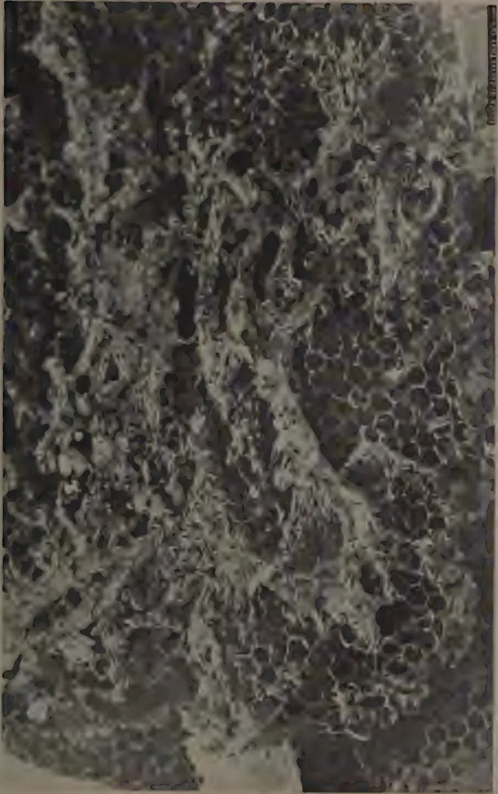
A black and white photograph showing a close-up of a bee hive comb that has been severely damaged by a wax moth. The comb is covered in a thick, white, web-like material, likely wax or silk, which has eaten away the honeycomb structure. The damage is extensive, with large areas of the comb missing, leaving a rough, irregular surface. The image is framed by a dark border, and a small vertical label is visible on the right edge.PLATE I.—BEE-HIVE ATTACKED BY THE WAX MOTH (Galleria mellonella L.).
This image is a scan of a blank page. The background is a uniform light beige or tan color. There are a few very small, dark specks scattered across the surface, which appear to be scanning artifacts or dust particles. No text, lines, or other graphical elements are present. 95DESCRIPTION AND LIFE HISTORYThe wax moth passes through four different stages before it finally emerges as a moth; namely, the egg stage, the larval or caterpillar stage, the pupal or resting stage and the adult or moth stage.
Eggs.—Under laboratory conditions at Peradeniya, egg masses were laid by the female moth in hidden and dark crevices of the breeding cage. Some spaces were so narrow that it was almost impossible to believe that the ovipositor could have been inserted into them. Each mass consisted of 200 to 300 eggs and the total number laid by a single moth varied from 562 to 798, the average being 688. The eggs were firmly attached to the surface of the cage. (Plate II., fig. 3). No eggs were laid in fresh combs supplied to them. These observations confirm the experiments made by Milum and Geuther (3). The eggs are creamy-white in colour and have a glistening surface. They are about half a millimetre in diameter. The egg stage lasts from 7 to 9 days, after which the larva or caterpillar emerges.
Larva.—The newly-hatched larva is about two millimetres in length. It is whitish in colour and has a pale brown head. Immediately after hatching, it goes in search of food. It crawls about most actively until it reaches the combs. On entering these, it finds a sheltered situation near the base of the cells. It then starts to construct for itself a home by disintegrating the cells and working its way through the septum which divides the two layers of cells. As it goes on tunnelling, it covers its external surface with a mass of silken web. This acts as a protection and is the first visible sign of its presence.
It is later that the black elongated pellets of excreta come to the observer's notice. The damage may be slight in the first few days and the bee-keeper may be inclined to ignore it. But within a couple of weeks, especially when several caterpillars are present, one will notice a pulverized mass of comb with the cells completely disintegrated. The caterpillar does no injury to bees in any stage of its life history, but the bees, finding their home unfit for further habitation, soon vacate it for a more congenial one. The caterpillars prefer to attack recently-vacated combs containing propolis and pollen on which they feed. They do not feed to any extent on pure wax or honey.
In 30 to 40 days the caterpillars are full-grown. (Plate II., fig. 4). They are then more or less cylindrical in shape and have prominent thoracic legs and a few hairs on their body.
96The average length is one inch. In colour they are pale yellow to greyish with brown heads. They are less active and move about less freely than the younger ones.
Pupa.—The caterpillar, when full-grown, spins a white silken cocoon open at one end. (Plate II., fig. 5). In this it passes its pupal stage. The cocoons are made invariably near the septum or on sheltered portions of the comb. They are partially dotted with frass. It is not uncommon to find four or five cocoons webbed together. The pupae are about three-fifths of an inch long and brownish in colour. (Plate II., fig. 6).
Adult.—The moth emerges in about 8 or 9 days. The female is markedly larger than the male. The outer edges of the fore-wings of the latter are indented (Plate II., fig. 1), and those of the former more or less straight. (Plate II., fig. 2). The wing expanse is from 1 to inches. The wings are ash-grey in colour and mottled. The lower half of the fore-wings is of a lighter shade than the upper half and, when the moth is in a resting attitude with the wings arched over the body, this lighter area forms a triangle along the back. (Plate II., fig. 7).
The moths are sluggish by day but very active by night. The female moths begin to lay eggs on the day after emergence and most of the eggs are laid during the second and the third day. The life of the moths is short being, under Peradeniya conditions, about eight days. The male moth lives longer than the female.
The wax moth usually makes its appearance about June soon after the first honey flow. About this time the colonies are considerably weakened on account of the natural swarming of bees, and the wax moth caterpillars find the empty combs ideally suited to them. The wise bee-keeper should, at this stage, remove all the combs which cannot be occupied by bees. Such combs can be kept for future use in a closed tin with a few naphthalene balls. Before re-insertion, the smell of naphthalene should be removed by airing.
One difficulty the bee-keeper may find in controlling the wax moth is the presence of jungle swarms from which moths may enter "cultivated" hives. Under the modern methods of bee-keeping which enable combs to be conveniently examined, the wax moth should find no place whatsoever in the hives. If, on inspection, signs of an attack by the wax moth are noticed the damaged portions should be removed immediately. They can be utilized for wax making. Pieces of comb should not be thrown away near the apiary as these are likely to attract stray moths.
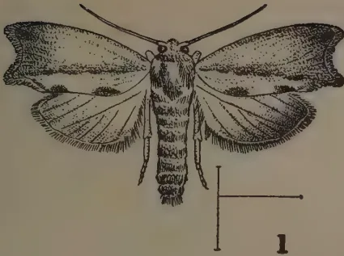
1
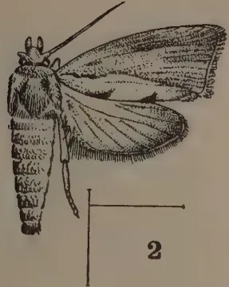
2
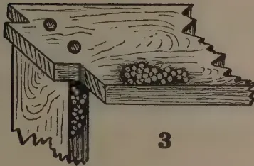
3
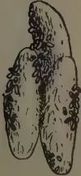
5
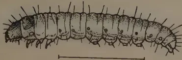
4
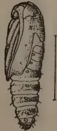
6
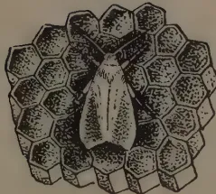
7
BLOCK BY SURVEY DEPT. CEYLON.
PLATE II.—THE WAX MOTH (Galleria mellonella L.)
Fig. 1.—Male moth, showing indented outer edge of front wing. Fig. 2.—Female moth, showing straight outer edge of front wing. Fig. 3.—Two egg masses laid on portions of breeding cage. Fig. 4.—Full-grown larva. Fig. 5.—Three cocoons. Fig. 6.—Pupa removed from cocoon. Fig. 7.—Female moth resting position. Lines near enlarged figures show natural sizes.
[Faint page: no legible print of its own could be verified; text withheld (stage 4 review list)]
This image is a scan of a blank page. The background is a uniform light beige or tan color. There are a few very small, dark specks scattered across the surface, which appear to be scanning artifacts or dust particles. No text, lines, or other graphical elements are present. 97The hive itself should be made most carefully with seasoned timber which will not warp. Cracks and bad joints must be avoided. It is in these cracks that the moths lay most of their eggs. The dimensions of the hives should be those approved by scientific bee-keepers as suitable for the particular species of bees. The larger the hives, the more space will there be in which to accommodate the enemies of bees. The entrance to the hive should be made as small as possible so that the bees may be able always to protect it. It should preferably be inch high and inches long, so that no caterpillars may crawl into the hive without being noticed by the bees. If the bees notice any intruder, they will not permit it to enter the hive. But if the entrance is too large, it is possible that a number of injurious insects and even lizards may creep in without being observed by the bees.
When stray caterpillars are found inside the hive, the bees expel them in the same manner as they would dead bees. But if they find that that is not possible, owing to the presence of an entrance guard, they generally cover the caterpillars with propolis and keep them in an embalmed state. This is possible only when the colony is a full one and there is a likelihood of some bees finding these intruders. It follows, therefore, that the keeping of hives in a very strong condition is essential to combat most enemies of bees.
Whenever the presence of the wax moth is suspected, weekly examination of the hives is absolutely necessary. It is not sufficient to examine only the combs. Cracks, bad joints and spaces between the brood box and the super, and those between the super and the roof should also be carefully examined for eggs. These parts should be thoroughly cleaned with a hard brush.
The life history of the wax moth has been described. It is known to assume dangerous proportions only in the plains of South India and at lower altitudes in Ceylon. Even in these places its ravages are prominent only in apiaries controlled by indifferent bee-keepers. The most satisfactory methods of controlling the wax moth are: (1) the careful examination of the hives at regular intervals; (2) the use of hives with well-fitted joints and made of seasoned timber; (3) the construction of hives of a suitable size and in accordance with the requirements of bees; (4) the provision of an entrance small enough to be protected by the bees; and (5) the maintenance of the colonies in strong condition.
98ACKNOWLEDGEMENTIt is a pleasure to acknowledge the help and criticism rendered by Dr. J. C. Hutson, the Entomologist, Peradeniya, in the preparation of this article.
REFERENCES23 527
99T. H. PARSONS, F.R.H.S.,
CURATOR, ROYAL BOTANIC GARDENS, PERADENIYA
THE seasonal notes for the present month conclude the year's programme. April is, on the whole, one of the busiest months of the year. The dry spell in south-west areas should have broken, for the average rainfall for Colombo area for this month is over 8 inches, for Kandy area 6 to 7 inches and for Nuwara Eliya and up-country areas 6 to 7 inches. The average for Jaffna is only 2 inches, but for Minneriya and Topawewa areas it is 4 to 6 inches.
Main garden operations this month will include preparation for the full monsoon planting of next month and it is wise to ensure that all such preparations are made well in advance. Where the planting of flowering or fruit trees is contemplated, the holes should now be excavated and refilled to allow the necessary time for sinkage. Notes on the proportion of manure or good humus, the size of holes, the correct planting distances of different trees, &c., have been given in earlier parts of this series.
Be sure to tread the soil down when refilling, and fill up the hole so that no surplus soil is left over other than the equivalent of the manure or humus added. Too often one sees the hole filled in loosely with a large surplus of excavated soil. This is wrong, for the soil in the hole (with the new plant) sinks rapidly, so that the hole, after about a year, is apt to become a water-logged pit or, if subsequently filled up with the surrounding or added soil, the plant becomes too deeply buried and suffers from lack of aeration.
Seeds of most vegetables and many flowers can now be sown with advantage. This gives them a month to six weeks before the monsoon breaks in full force and by that time they will have passed the very young and tender stage. In the north, brinjal and chillies should now be planted; other operations will include the gathering of dry grain, attention to tobacco crops, the harvesting of chillies and the planting out of betel.
100Up-country, the liability to frost or very cold spells will have passed and this month is probably the best month of the year for plant growth since climatic conditions are equable and the south-west winds will not yet have arrived. All beds and borders should be tidied up and all drains and culverts attended to in readiness for the coming monsoon. Where lawns have to be touched up this is a good time to do so. At high elevations lawn grass seeds can now be sown, but generally the instructions given in the calendar notes for October/November on lawns should be followed. Vegetable crops, such as potatoes, beans and peas, should be left till after the worst of the south-west monsoon has passed as these crops suffer considerably in the very wet and windy months of June and July which would be the normal cropping season if sown now.
In mid-and low-country regions receiving south-west monsoon rains activities are many. Apart from preparation for more permanent planting next month, most vegetables and particularly yams are planted now, preferably early in the month. All mulches put around plants or on borders for dry weather purposes may now be forked in and the soil thereby stirred and opened up for the reception of the small showers expected.
Most of the flowering trees and shrubs will be in flower at this time or have just completed their flowering. All shrubs and small trees should be dealt with by a light pruning of the dead flower heads, thus encouraging further growth in the coming months. Insect pests are very prevalent at this time, and susceptible trees, shrubs and perennials should be sprayed. Generally speaking, leaf-sucking insects are dealt with by applications of nicotine or kerosine emulsion sprays, leaf-eating insects by lead arsenate sprays, and mildew (odium) and similar attacks by a lime-sulphur spray such as "Sulfinette", or by a dusting with flowers of sulphur.
A troublesome disease in the cultivation of vegetables such as brinjals, tomatoes and potatoes and in flowering annuals such as zinnias is bacterial wilt disease. Even the so-called wilt-resistant strains are not entirely immune. The seat of this trouble is invariably in the soil, and a dressing of powdered sulphur to the soil at the rate of to 3 oz. per square yard is recommended. In its work of sterilization, the sulphur also causes the soil in time to become acid or sour so that it is necessary to apply lime to correct this. Dressing of lime at the rate of 12 oz. per square yard should therefore be given about 8 months after application of the sulphur dressing. Soil sterilization by allowing the soil to rest or fallow is recommended by some, as is also a syringeing of the growing crop every 10 days with a solution of permanganate of potash.
101Before closing this series of articles a summary of the essential gardening points of the old-time gardener might be useful. Some have already been dealt with in detail in earlier notes, and some have not.
1. In watering, use rain water in preference to any other, give a good soaking of the plant, bed or pot at lesser intervals in preference to a mere sprinkling at frequent intervals. Orchid cultivation is an exception when damping down rather than heavy watering is necessary. Watering is best done in the evenings. In the case of beds or borders, hoe or otherwise loosen the surface of soil before watering.
2. In potting plants, see that all receptacles are clean. See also that drainage is ample and that large crocks of broken pieces of pots are placed over the draining holes to prevent the silting up by the fine particles of soil consequent upon frequent waterings. A good rich soil should also be used for pot work, as the plant's full source of sustenance is confined to this.
3. With robust trees and shrubs, thin out rather than prune. First remove all dead and weakly shoots. Prune only when the plant is becoming over-grown, with a too thick head, to allow access of light and air to the head of the plant. The best time for pruning is, with fruit trees, usually after the crop has been gathered; with shrubs and flowering trees after the flowering is over. Periods of severe drought should be avoided for pruning of any kind. Any large-size cut should be treated with a wood preservative at once.
4. Always look ahead and think out requirements well beforehand. Operations must be done in their proper season if success is to be attained as, with most garden work, preliminary operations are necessary. Plant holes shall be dug a month before actually planting out, and beds or borders should be left unplanted for a fortnight to allow sun and air to benefit the soil.
5. Keep the garden neat and clean; get all weeds out before they seed and utilize these with grass cuttings, sweepings and the like for compost making.
6. Remember that material from the compost pit or the manure pit must be well matured before putting in the garden. This humus is the mainstay of the soil, but under tropical conditions it is quickly used up. Manure lightly and often, rather than heavily but infrequently. Remember also that chemicals are supplementary to organic manures and should properly be used in conjunction with them.
102If chemicals are used the general rules for manuring are :—
Finally keep a good look out for fungoid and insect pests. There are now many proprietary articles on the market for controlling them. Some insect and fungoid pests are not apparent until they have reached a very advanced stage and for this reason it is sometimes impossible to check their ravages. Prevention is half the battle in combating the majority of garden pests and a sharp look out must be kept whilst the plants are young and in the vigorous growing stage.
Application at this stage arrests the damage whereas nothing will save the crop later on. All diseased portions of plants should be burned and not placed in the rubbish or compost pit. The soil from which the diseased plant came, if required for immediate use, should be treated with a solution of 1 lb. of permanganate of potash to 50 gallons of water. If it can be left for a month or two, a solution of 1 gallon of carbolic acid to 50 gallons of water is more effective. The good gardener keeps a perpetual watch on his subjects. He has to think things out well in advance, and in the tropics he must take full advantage of monsoon conditions for planting purposes.
THE problems of soil conservation, as seen from an economic and social point of view, may be summarized in four rather broad statements : (1) We need to know when exploitation becomes uneconomic, and the factors that determine the level whereon conservation becomes economic for both the individual and society. (2) We need to know also the social and economic factors which cause exploitation to continue after conservation has become economic. (3) After we have analyzed the causes of exploitation, we need to evaluate the various methods of inducing conservation so that those most applicable may be used in a given situation. (4) Once a particular program is set up, we need to know whether it has achieved its objective of controlling erosion and whether it is an acceptable and economic program from the individual farmer's point of view.
All these four general problems impinge upon the individual farm, and all have wider implications of a regional and social character which may help to determine the specific plan for adoption and the social philosophy upon which a program of control or planning may be justified. The objective of this article is to outline some of the findings of a recent study of the soil conservation program on individual farms in Iowa. While the bulletin reporting the study deals largely with the effect of the program, the first three problems are discussed here in order to show the close inter-relationship of all four.
Under perfect competition, given such basic assumptions as complete mobility and divisibility of the factors of production, perfect knowledge and the "economic man," there would be no such phenomenon as the uneconomic exploitation of resources. Neither would there be any conflict between the social and individual point of view, since such conflicts arise only when social groups or agencies have greater knowledge than the individual and can, therefore, make wiser decisions or eliminate certain risks and uncertainties. Given perfect competition, the maximum social and individual productivity will result from the interplay of competitive forces at the margins. When land is plentiful and cheap, relative to labor and capital, it will
* By Arthur C. Bunce, Assistant Professor at Iowa State College and co-operative agent of the economic research division of the Soil Conservation Service in Soil Conservation Vol. V. No. 4, October, 1939.
104be used extensively and very little effort or cost can be expended to conserve it. But as labor and capital become more plentiful and land relatively scarce, then more labor and capital are combined with land in a given area and conservation automatically becomes economic.
In the early days of the development of the United States, when land was very abundant, it was "economic" to exploit the land and invest capital in commerce, industry, and education. Out of this early exploitation we built our cities and industrial plants. As population increased and our agricultural land was taken up, land value rose, interest rates declined, and yet exploitation continued although conservation became more and more economic. In a given situation, the major factors that determine the level whereon conservation becomes economic are the interest rate, the rate at which exploitation is depleting the capital assets, and the increasing cost of maintaining or restoring them as erosion becomes accelerated.
In a dynamic economy of changing population, changing techniques of production and transportation, changing consumer demand and flexible prices, the individual is not able to anticipate the future with certainty. This uncertainty may lead to a conflict between the individual, to whom exploitation appears to be economic, and society which because of broader interests sees that the present values forming the basis of the individual's judgment do not adequately represent the future. Such a situation is sometimes referred to as a conflict between individual time preference and social time preference, but this is merely a rather indefinite way of stating that society, because of its broader interests, is better able to anticipate the uncertainties of the future.
In order to discover whether an area has reached the point where soil conservation is economic we would have to estimate the annual rate of capital loss due to erosion, the costs of achieving erosion control, and the effect of the control measures upon current income for a sample of the various types of farms found in the area. While this has been done in the study reported, the general indications are that in the southern part of Iowa participation in the soil conservation program has been economic. For example, 55 per cent. of 310 farmers stated that the conservation program had increased the productivity of their farms, and over 90 per cent. stated that they expected the productivity of their farms to be increased in the next few years. Seventy-eight per cent. reported that the program had increased the value of their farms, and according to the estimates made by 172 of the farmers, this amounted to an average increase of $5.44 per acre. In interpreting these figures, the fact that assistance was given in obtaining lime and fertilizer must be kept in mind.
This study also indicates the relationship between the degree of erosion and the costs of control. Under the Soil Conservation Service program, permanent pasture on co-operating farms is to be increased by about 10 per cent. in the western live-stock and south-central pasture areas of Iowa, and intertilled crops are reduced about 11 per cent. In the southern pasture area, permanent pasture is being increased by 23 per cent. and intertilled crops reduced 39 per cent. Similarly in the case of structures, wide differences between the areas are reported. The southern pasture area, for example, has larger acreages
105of the cropland terraced and has more temporary and permanent dams erected than in the other two areas. As for contour farming and strip cropping, however, the southern pasture area has a smaller acreage per farm than have the other two areas.
These differences in the program, in adjoining areas in one State, reveal clearly the fact that conservation planning varies widely as physical conditions vary. Even within one watershed wide differences between the treatment of individual farms is noticeable. In the case of the areas mentioned above, the southern pasture area has more serious sheet erosion and more gullying than have the western live-stock and south-central pasture areas, and the analysis indicates that in areas where erosion has made greater progress the cost of control in terms of structures involving capital outlays is larger and the changes in land use are more drastic.
In some areas in Iowa only relatively small changes in land use, coupled with such practices as contour cultivation and strip cropping, may be sufficient to stabilize soil fertility; in other areas terracing, retirement of cropland to pasture, and longer rotations may be needed, together with still other conservation practices, in order to achieve control. This seems to emphasize the fact that we need an economic appraisal of every suggested plan for soil conservation on an individual farm or area in order to determine whether or not conservation is economic. If this is not done, we may be allocating our capital to the creation of resources which are not the most economically productive, and the same amount of money expended on other areas or on other types of resources might achieve more conservation of more productive resources.
If conservation becomes economic as population and capital increase, we are faced with the problem of determining the factors which prevent an automatic adjustment from taking place. An analysis of the basic assumptions underlying perfect competition reveals some of the economic and social problems associated with soil conservation.
We find that in agriculture we do not have complete mobility, because a rural population develops a degree of fixity in its regional patterns and its attachments to familiar scenes. Similarly, perfect divisibility of factors is not possible, since farm sizes tend to become associated with certain typical types of enterprise and density of population. As to knowledge, we find that the majority of farmers are not aware of alternative uses for the resources, and they tend to follow a customary method of farming. Finally, the farm unit is not purely a place of business but is also a home, and therefore consideration other than the purely economic play an important part in making decisions.
One of the causes of these rigidities is that certain institutional patterns developed during the period when exploitation was economic. For example, a type of tenure relationship may evolve, market outlets for particular products may be established, taxes for roads and schools and other public services become fixed charges, and rather stable farm units become associated with the farm
106buildings. Under the exploitive system these may be efficient ; but as the virgin fertility is used up and erosion develops, they may act as resistances to the necessary adjustments.
Another important factor tending to prevent adjustment and the shift to a conservation system of farming may be the mistakes of the past in permitting or encouraging a type of land use which is not permanently adapted to the climatic and soil conditions of the region. For example, the use of much of the Great Plains region for arable farming has led to the present population and farm-size pattern, with the development of roads and schools, present land values and taxes, and marketing facilities for cash grain crops. In these circumstances the present institutional set-up may make it impossible for an individual to adopt conservation measures because of the costs to be incurred and changes involved, although the adjustments might be economic were there greater flexibility.
A further important factor which must be considered is the question of whether or not the individual farmer is suffering all the damages of exploitation, or whether certain of these damages are borne by other individuals or groups. Where the latter occurs, as in flood damages, the silting of rivers, reservoirs, and lowlands, or where gullies and run-off damage adjacent lands, then continued exploitation may be economic for an individual only because he does not bear all the disadvantages and damages.
These causes of continued exploitation vary greatly between regions, States, areas within a State, and even between farms in a given area. In some areas the tenure system may be the most important resistance ; in others it may be farm size, and again it may be ignorance or inertia. Only as we discover what these resistances are can we apply the most strategic methods of inducing conservation.
In Iowa the tenure system, with its resulting insecurity of occupancy, and the mortgage problem have been shown to be important social factors resisting the adoption of a more permanent system of farming.
The present study reveals that farmers in southern Iowa have recognized the menace of erosion for many years. Over 50 per cent. of the farmers co-operating with the Soil Conservation Service had noticed erosion on their farms, over 15 years ago, and 27 per cent. had noticed it 6 to 15 years ago. Of a similar group of farmers not co-operating, 47 per cent. had noticed erosion over 15 years ago. In their attempts to control it, many had adopted rotations more suited to the topography of the land ; some had put brush, straw, and manure in gullies and had established grassed water-ways. Fifteen per cent. had good results in controlling gullying. The reasons given why they did not do more were : "cost prohibitive," "did not know how," "tried but failed," "did not get around to it," and "did not know how long would be on the farm."
This throws some light on the problems of analyzing these basic causes. We find lack of capital for financing changes, lack of knowledge, past failures, inertia, and insecurity. If these are important in one of the richest of our agricultural States, then they may be even more important in other areas where
107more insecurity and less financial reserve are dominant. The problem of conservation appears to be linked closely to the problems of farm credit, tenure, and education.
Where there are many basic causes of soil exploitation, there are numerous methods that can be used to offset them. These may be briefly classified as follows: (1) Education by means of demonstration projects, Extension Service activities, high school and college classes, and publicity releases of all kinds; (2) direct subsidies to help defray the cost of actual conservation measures; (3) indirect subsidies, such as free services of technicians for planning farms, special rates of interests on loans for conservation expenditures, tax rebates, low-cost lime, fertilizer and seed, and subsidized prices for special products; (4) laws affecting the resistances, by modifying the social conditions, such as tenure, resettlement, and educational legislation; (5) laws permitting local group action, as zoning ordinances or conservation district acts; (6) laws limiting the property rights of individuals in land, such as some zoning acts and specific regulatory acts to prevent abuses which are harmful to society; and (7) public ownership.
While the list above is not complete, it does serve to outline the large number of alternative and supplementary methods that may be used to induce conservation or control land use. Practically all are being used to-day, singly or in combination, by various Government agencies at different levels; and herein we find a major difficulty in the evaluation of any particular program, because not only must we estimate the program's effectiveness in meeting the basic economic and social causes of the condition we are trying to remedy, but we must also attempt to disentangle its influence from the influence of other programs which also impinge upon the problem.
For example, an important factor to be considered, when evaluating the amount of change in land use introduced by the Soil Conservation Service, is the change in land use that has taken place, on farms not co-operating in the program, because of the influence of factors other than the Service program. In the study here discussed a sample of farms not co-operating with the Soil Conservation Service was taken and the changes in land use from 1933 to 1937 were tabulated. This showed that on non-co-operating farms permanent pasture had been changed very little, intertilled crops had been decreased, small grains increased, and total meadow decreased. In all areas, however, the changes in land use towards a soil-conserving system were much greater on the farms co-operating with the Service than on those not co-operating.
We should know how important these other factors have been in assisting the farmers co-operating with the Soil Conservation Service to make the needed reductions in the acreage of intertilled crops, since obviously the final effect is the result of their concurrent action. To evaluate this situation objectively appears impossible at this time. Further study certainly should be given problems such as these in order that farmers and State and Federal workers may make effective decisions.
108Difficult as this problem is, it appears essential that some attempt be made to evaluate the effectiveness of all control measures in terms of their ability to affect the basic social and economic causes underlying erosion. This evaluation can be made only as we obtain more insight into the causes, the methods that may be used, their costs to society, their acceptability and their effectiveness as they are applied to relatively small areas and on individual farms.
Any conservation program that is established in any particular area must satisfy two basic requirements if it is to be permanent and widely adopted over the areas where conservation is needed. It must control erosion effectively and it must be acceptable to the farmer. To be acceptable, when no subsidy is paid, means that it must be economic from the individual operator's point of view. Again, farmers' opinions must be given an important place because it is what the farmers think of the program, and specific elements in it, that will finally determine how much of it becomes permanent and whether or not it will spread to farms outside the demonstration areas.
As to the effect of the program upon erosion, over 90 per cent. of the farmers report that it has been effective in reducing both gully and sheet erosion. The accompanying table gives a summary of their opinions :
Table showing opinions (by percentage of farmers reporting) regarding the effect of the program on erosion conditions in southern Iowa, 1937. Sheet erosion was reported on by 290 farmers ; gully erosion, by 284 farmers.
| Types of Erosion. | Stopped. | Greatly reduced. | Slightly reduced. | Not reduced. | Total. |
|---|---|---|---|---|---|
| Per Cent. | Per Cent. | Per Cent. | Per Cent. | Per Cent. | |
| Sheet erosion | .. 4 .. | 51 .. | 36 .. | 9 .. | 100 |
| Gully erosion | .. 11 .. | 58 .. | 24 .. | 7 .. | 100 |
This indicates that in southern Iowa the program has been quite successful in controlling erosion, according to the present opinions of the co-operating farmers. It will be interesting to learn whether the same farmers on the same farms will have the same opinions 5 years from now.
When we turn to the second question, of whether or not the program has been acceptable to the farmer, we find a much more complicated problem, with parts of the program satisfactory to all and some elements in it satisfactory. The economic effects are related to the changes in land use and the resulting repercussion on yields, the relationship of grain to roughage feeds, the live-stock system, and the total and monthly labor quantities used. Only a few of the most important results can be presented here.
As was indicated previously, the farmers stated that the program had increased the productivity of their farms, and they seem to have been well satisfied with it in spite of the fact that they listed numerous specific difficulties resulting from farming terraced, strip-cropped or contoured fields. In general, the farmers would continue all the present practices and the land-use patterns introduced, without further assistance from the Soil Conservation Service,
109with the exception of strip cropping which would be discontinued by 27 per cent. of the farmers, and contour farming which would be discontinued by 15 per cent. of the farmers.
In the case of structures such as terraces, permanent dams and diversion ditches, most of the farmers stated that they would not erect them without assistance. This indicates that certain parts of the program may be generally accepted while some parts, especially those involving large capital outlays, may not be accepted without some form of subsidy.
The effect of the program has been to increase the quantity of roughage feed and, in most instances, reduce the quantities of grains. The increase in roughage will be used to reduce overgrazing during the dry summer period ; some will be plowed under as green manure, and some will be used up by feeding a larger number of roughage-consuming animals. There was no indication that a smaller number of hogs would be raised, and the study indicates that the number of hogs raised on any farm was not correlated with the percentage of the land in intertilled crops but was correlated with the amount of feed bought and sold.
No final conclusion can yet be reached regarding the effect of the program upon the net farm income. Bulletin 381 outlines the factors to be considered by each farmer when he must make a decision whether to adopt or not to adopt a conservation program. In general, the study indicates that in southern Iowa conservation is economic, that the soil conservation program is effective in controlling erosion and that it has largely been accepted by the participating farmers as a permanent system.
110COPRA is a perishable commodity. The amount of deterioration and loss of actual copra which can occur varies in different circumstances. Commencing with a given quantity of fresh coconut meat the ultimate quality and the quantity of copra received at the mill, depend on four factors :—
The time elapsing between production and milling is dependent on locality of production, difficulties of collection and local transport, seasonal variation in crop, freight charge fluctuations, amount of cargo space available in ocean-going steamers, and the state of the copra market.
In the case of Straits copra, when shipments keep pace with purchases, the normal interval is just over 2 months, but, in exceptional circumstances, the copra may be held in store for 2 or 3 months prior to shipment. Thus for example, during the Great War it was impossible, on occasions, to obtain cargo space from certain ports and more recently, a long period of low prices resulted in considerably reduced shipments. When such situations arise, stocks accumulate in the warehouses, and small dealers, and even producers, may be forced to hold up their copra.
Table I. provides a rough detailed estimate of the time taken to pass copra from the small-holder in this country to the miller in Europe.
Some of the operations shown therein may be omitted or all may be included in full, so that small-holders' copra which is exported may take from one to seven months to reach the oil mill.
Estate copra is nowadays generally exported from the estate direct to Europe on a through bill of lading and little more than a month need elapse between production and milling. Copra milled locally is seldom kept for more than a month after production.
* By F. C. Cooke, Chemist (Coconut Products), Department of Agriculture, S.S. & F.M.S., in The Malayan Agricultural Journal, Vol. XXVII., No. 11, November, 1939.
111COPRA TRADINGIn the case of the small producer, a small quantity of "raw," half-cured or somewhat under-dried loose copra may perhaps be kept for as long as a week before
TABLE I.Approximate Times for Various Operations which may occur between Producing and Milling Small-holders' Copra.
| Operation | Time. | |
|---|---|---|
| Days. | ||
| House storage | .. .. | 1 to 7 |
| Shophouse storage | .. .. | 0 to 7 |
| Local dealers' stores | .. .. | 0 to 7 |
| Road, river or coastal transport | .. .. | 1 to 4 |
| Warehousing at export centre | .. .. | 0 to 150 |
| Ocean shipment | .. .. | 30 to 40 |
| Bulk storage before milling | .. .. | 3 to 14 |
| Total .. | 35 to 229 | |
the collector calls or delivery is arranged. Whenever possible the copra is sold without delay. These small parcels of copra are bulked by a succession of buyers—the shop-keeper, the transporter, the small local dealer, and ultimately the export dealer and shipper—into consignments of gradually increasing size.
Since he usually buys his copra at a flat rate from producers and then may sell it on a dry-weight basis to the merchants, the local dealer, will usually lay the wettest copra out in the sun for further redrying, particularly when it is likely to pay him to delay resale. Conversely, when copra is sold at a flat rate, cases have occurred where the lowest grades of copra have been deliberately moistened by the seller to increase the weight.
The bulked copra which ultimately arrives at the export centres, Singapore, Penang and Port Swettenham, from the different production centres is variously dry and exhibits different features and degrees of deterioration depending on the treatment accorded to the product and effect of weather conditions on production, storage and shipment. It is for this reason that it is described as "mixed" copra, i.e., a mixture of f.m.s. and f.m. copra*; the geographical origin is added to this description, e.g., Kelantan "mixed" copra, and this serves to identify the quality, since each coconut district has its particular standard of quality, or a recognized f.m.s./f.m. ratio for "mixed" copra.
The small-holders' bulked copra now being received from most districts is reasonably dry and of high quality and the "ratio" for copra from these districts has distinctly improved; nevertheless some of the copra coming generally from the more remote regions still continues to be of inferior quality. In exceptional cases, such copra is wholly f.m. quality and is offered in a "raw" condition.
* The terms f.m.s. and f.m. are expressions of quality and denote respectively "fair merchantable sundried" and "fair merchantable," the latter being the inferior quality.
112“Raw” or half-cured copra, if produced near the export centres is usually received at the export warehouses in a fresh condition but that from the more distant and inaccessible regions or from those places where collection is difficult, is more often badly deteriorated, except when the local dealers or shippers have redried the product before sending it to the export centres.
Fresh “raw” copra, as received, is warm, has a pale yellow gummy surface, is free from mould, and exudes a not unpleasant yeasty odour. Deteriorated “raw” copra is hot, black, soft, matted and glutinous, insect-ridden and dirty; it is covered with a thick layer of wet slime and black mould and has a revolting sour smell.
All bags of “raw” copra are usually emptied without delay, and the contents built up into a huge stack.
Continuous records show an initial rise in temperature inside such a stack from 35° to 52°C. in about 3 hours. Subsequently the temperature declines slowly to about 38°C. on the eighth day of storage and after that even more gradually to about 30°C. in about three weeks, by which time the moisture content has been reduced to between 4 and 5 per cent. During this period the temperature of the stack rises each night when the warehouse doors are closed.
The condition of fresh “raw” copra which has been expeditiously reconditioned may be surprisingly good in spite of previous superficial development of bacterial slimes. In one instance, although a sample of such copra after reconditioning had a dirty greyish-yellow appearance, it showed little internal discoloration while only 4 per cent. of the pieces were deeply corroded and there were only 8 per cent. of “smalls”. The copra had a not unpleasant smell and the acidity of the contained oil was only 0·8 per cent., calculated in terms of lauric acid.
“Raw” copra which has been permitted to deteriorate seriously before warehousing cannot be satisfactorily reconditioned. After warehousing, the whole of the copra is internally discoloured, the range of colour being light-brown to black. The bulk of the pieces are very deeply corroded and all are in process of breaking down into small fragments. There is very high percentage of “small”, foreign matter and dust, and the acidity of the contained oil, calculated as lauric acid, is usually in excess of 5 per cent. Such copra is therefore below Straits f.m. quality and requires to be “brightened” with copra of somewhat better quality before shipment.
Irrespective of their condition, the various consignments of “mixed” copra received at the warehouses are usually all made up into large stacks of loose or bagged copra as described above. In this way, copra is self-dried by its own heat of decomposition,* the contained moisture being reduced from anything between 7 and 25 per cent. to between 4 and 7 per cent. according to season. A relatively stable and reliable product is thus obtained which may be sorted, blended and graded for export. The length of storage required
* For discussion on heat of decomposition see Special Bulletin No. 28, General Series, Department of Agriculture, S. S. & F. M. S. Copra Deterioration, pp. 20 to 22.
113depends principally on the moisture content of the copra on receipt, but occasionally self-drying may be curtailed to make up a consignment when copra is short. Dry copra requires about a week's storage, fairly dry copra about 14 days, and very wet copra as much as three weeks before it is ready for shipment.
Copra is exported in two grades, Straits f.m.s. and Straits f.m. After warehouse drying, the various lots of "mixed" copra are either up-graded by the removal of defective pieces or down-graded by the removal of good pieces whichever is necessary to produce the required grade. Occasionally there is no picking over, since a parcel may be used to brighten up or bring down a consignment of bulked copra to the desired standard. The method of bulking is to build up, layer upon layer, the various parcels of copra from different sources, so that blending and mixing takes place when this stack of loose copra is broken up and the copra shovelled into sacks. The copra then remains in bags until shipment can be arranged.
During ocean shipment a certain amount of self-heating again occurs in the copra, which is subjected to considerable pressure and disturbance due to the movement of the ship. The individual bags of copra enter the ships' holds at about air temperature (28°C.) ; subsequently there is a slow daily rise for three days to about 35°C. or more according to the efficiency of ventilation in the holds and the condition of the copra ; ultimately when more temperate regions are reached the temperature gradually declines.
The merchant shipper who prepares the copra for export takes full responsibility for the ultimate quality of the copra on arrival and for any serious loss in weight in transit.
The foregoing remarks do not usually apply to estate copra which is nowadays mostly of uniformly good quality and can, in consequence, be shipped direct from the estate to Europe without any warehousing, inspection or blending being necessary. Such copra is classified as Straits f.m.s. although for copra to be forwarded without inspection or warehousing it has, of necessity, to be above normal quality to avoid the possibility of subsequent disputes and arbitration. It is obvious that the interval between production and milling will be much reduced with direct shipment and the amount of handling will also be considerably less. For these reasons, copra of this type usually obtains a small premium.
The agents of deterioration during transport and storage are yeasts, bacteria, various moulds and insects, and the heat of decomposition, but it is the moisture present in the copra which makes deterioration possible and determines which (if any) of the agents may operate and the extent of the deterioration and loss which occurs.
The individual effects of these several agents cannot be separately determined, as it is not practicable to restrict deterioration to a single factor. Nevertheless it is possible to determine, by experiment, the total deterioration and loss which may be expected to occur with a given set of conditions. Even then it is still not possible to follow normal trading, transport, storage and blending practice since copra under observation has to be periodically sampled and cannot therefore be mixed with other copra.
114STORAGE TRIALSIn order to ascertain the extent of the loss which occurs when different types of copra are kept for long periods under normal conditions of storage, two storage trials have been carried out with the six different types of produce copra shown in Table II. These may be regarded as representative of the different types of copra produced in Malaya. The majority of estates nowadays produce copra corresponding to grade W1., while the best small-holder producers offer grades W1. and W2. Nevertheless copra of grade W3 does still continue to be made in one or two inaccessible regions and this degenerates, according to the absence of care in production or to the treatment accorded to it by the local dealer, to yield copra corresponding to grades R 1, R 2, and R 3.
TABLE II.
Types of Copra used in Storage Trials
| Lot. | Initial Condition. | Moisture Content. Per cent. |
|---|---|---|
| W1 | Dry smooth white copra | About 8 |
| W2 | Fairly dry white copra | 9 to 12 |
| W3 | Half-dried "raw" white copra | About 20 |
| R1 | Dry unscorched "red" copra | About 8 |
| R2 | Fairly dry "red" copra | 9 to 12 |
| R3 | Half-dried "raw red" copra | About 20 |
The various lots described in Table II. were each prepared from 100 nuts collected from the same estate. The "red" copra was produced by allowing bacterial decomposition to be initiated prior to drying and to continue to develop subsequently through deliberate carelessness during drying. All the copra was carefully kiln-dried over open smokeless fires.
Two methods of storage were used, the period of storage being 2 months in each case. In one, Trial A, the six lots of copra were sent immediately after manufacture for bulk storage in a Singapore warehouse with copra of corresponding qualities (continuous warm storage). In the other, Trial B, there was an initial period of 14 days during which the six lots of copra were kept in a cool place as individual isolated bags (cool storage). Subsequently this copra was warehoused as in the first trial.
It was not possible in either of these trials to simulate exactly the handling and movement, and the conditions of temperature and pressure to which copra is normally subjected during local trading, warehousing and ocean shipment. The conditions of the first trial may nevertheless be considered roughly to correspond to the treatment accorded to the copra from large producers, while those of the second trial are meant to simulate the treatment accorded to the copra made by small producers, amounting to about two-thirds of the total copra produced in Malaya.
The various lots of copra were each examined, weighed and sampled before, during, and after storage. These samples were analysed for moisture, and the acidity of the contained oil was also determined. At the conclusion of the period of storage, the amount of "smalls" and dust associated with each lot, which in practice is reckoned as copra, was also ascertained and the copra was examined qualitatively by a Singapore merchant.
115Thus it was possible to estimate the true loss of copra which occurs during storage and to measure the amount of deterioration under the various conditions stated.
The comparative results of the two trials are shown in Tables III. to IX. inclusive.
TABLE III.
Total Loss in Weight during Storage.
(Weights correct to nearest lb.)
| Lot. | Trial A. Continuous Warm Storage. |
Trial B. Cool and Warm Storage. |
||||
|---|---|---|---|---|---|---|
| Original Weight. | Loss in Weight. | Loss. | Original Weight. | Loss in Weight. | Loss. | |
| lb. | lb. | Per cent. | lb. | lb. | Per cent. | |
| W1 | 63.75 | 1.50 | 2.3 | 56.25 | 3.25 | 5.8 |
| W2 | 68.75 | 5.50 | 8.0 | 64.25 | 6.00 | 9.3 |
| W3 | 78.75 | 18.75 | 23.8 | 79.75 | 20.50 | 25.7 |
| R1 | 60.50 | 3.25 | 5.3 | 58.50 | 3.25 | 5.6 |
| R2 | 67.50 | 6.00 | 8.9 | 64.25 | 10.00 | 15.6 |
| R3 | 78.50 | 17.00 | 21.6 | 74.50 | 20.25 | 27.2 |
The total loss in weight in storage includes not only loss of free moisture, but also loss of actual dry copra through decomposition. The loss is expressed as a percentage of the original weight of copra, including contained moisture. It is to be noted that in the transportation of "raw" copra (W3 and R3) about a fifth by weight of the consignment consists of avoidable moisture, thus increasing freight costs.
The final moisture content of the copra after warehouse drying was between 4 and 5 per cent. in all cases.
TABLE IV.
Loss of Actual Copra during Preparation and Storage.
(Weights correct to nearest lb.)
| Lot. | Trial A. Continuous Warm Storage. |
Trial B. Cool and Warm Storage. |
|||||||
|---|---|---|---|---|---|---|---|---|---|
| Original Dry Weight.* | Preparation Loss. | Storage Loss. | Total Loss. | Original Dry Weight.* | Preparation Loss. | Cool Storage. | Warm Storage. | Total Loss. | |
| lb. | lb. | lb. | Per cent. | lb. | lb. | lb. | lb. | Per cent. | |
| W1 | 59.25 | N | N | N | 52.00 | N | 0.50 | 1.50 | 3.8 |
| W2 | 61.75 | N | 1.75 | 2.8 | 56.50 | N | N | 1.50 | 2.6 |
| W3 | 63.25 | N | 6.00 | 9.5 | 65.00 | N | 6.75 | 2.25 | 13.9 |
| R1 | 55.25 | 1.50 | 0.25 | 3.2 | 55.25 | 1.50 | 2.00 | 1.00 | 3.1 |
| R2 | 59.25 | 1.50 | 0.25 | 3.0 | 58.25 | 1.50 | 5.25 | 1.25 | 13.7 |
| R3 | 61.25 | 1.50 | 2.50 | 6.5 | 58.50 | 1.50 | 5.25 | 2.00 | 15.0 |
N=nil or negligible.
* The figures in these two columns were determined by converting the actual weight of each lot according to its moisture content.
116It is perhaps surprising that lot W3 ("raw" white copra) of Trial A showed a greater loss than lot R3 ("raw red" copra) of the same trial. It was also more rank and infested by insects. This is doubtless because smoke adheres readily to the surface of slimy "red" copra and this film of smoke serves to provide a temporary check to insect attack and bacterial deterioration during the short period before warehouse-drying. Where there is prolonged cool storage before warehousing, as in Trial B, the agents of deterioration are able to operate freely once the protective smoky film has been broken down and penetrated.
The high spoilage for lots W3 and R3 of Trial B is not exceptional. Such extensive deterioration and breakdown can and do occur in practice.
In the extreme, with abnormally prolonged storage of deteriorated "raw" copra, maintained continuously in a wet condition, it is even possible for the loss to be in the neighbourhood of 99 per cent. since long sustained insect attack and progressive decay due to moisture produced during decomposition may leave only fragments of brown testa, or skin.
Attention is next drawn in Table V. to the high production of "smalls" resulting from the storage of "raw" copra in Trial B. Individual pieces of copra were so deeply corroded as a result of deterioration during the period of cool storage that they readily broke down when pressure was applied to the copra or if the copra was disturbed.
TABLE V.
Reduction of Copra to "Smalls" and "Dust"
| Lot. | Trial A. Continuous Warm Storage. |
Trial B. Cool and Warm Storage. |
||||||
|---|---|---|---|---|---|---|---|---|
| Original Dry Weight. |
"Smalls" | "Dust." | Percentage Spoilage. |
Original Dry Weight. |
"Smalls" | "Dust." | Percentage Spilage. |
|
| lb. | lb. | lb. | lb. | lb. | lb. | |||
| W1 | 59.25 | N | N | N | 52.00 | 0.75 | N | 1.4 |
| W2 | 61.75 | 0.25 | N | 0.4 | 56.50 | 0.75 | 0.25 | 1.8 |
| W3 | 63.25 | 0.75 | 0.25 | 1.6 | 65.00 | 10.25 | 0.75 | 16.9 |
| R1 | 55.25 | N | N | N | 55.25 | 1.00 | N | 1.8 |
| R2 | 59.25 | N | N | N | 58.25 | 0.50 | 0.25 | 1.3 |
| R3 | 61.25 | 0.75 | 0.25 | 1.6 | 58.50 | 11.75 | 0.75 | 21.3 |
In Malaya any "smalls" and "dust" are included and sold as copra, but their presence in any quantity is a serious matter to the miller. Seriously deteriorated copra will suffer further size reduction during shipment and transport to the oil mills, so that a larger surface is exposed to the agents of deterioration and losses of small pieces and dust will occur when the material is transported loose in conveyors.
It is to be observed from Table VI. that the development of acidity is not serious during the period of cool storage when the loss of copra is greatest (W3, R1, R2, and R3 of Trial B). Samples W3 in both trials had a revoltingly sour smell.
117TABLE VI.
Acidity of Oil in Stored Copra
(Calculated as lauric acid)
| Lot. | Trial A. | Trial B. | ||
|---|---|---|---|---|
| After 2 months' Warm Storage. | After Cool Storage only. | After Cool and Warm Storage. | ||
| Per Cent. | Per Cent. | Per Cent. | ||
| W1 | 0.17 | 0.11 | 0.30 | |
| W2 | 0.22 | 0.16 | 0.32 | |
| W3 | 2.61 | 0.81 | 3.11 | |
| R1 | 0.25 | 0.17 | 0.47 | |
| R2 | 0.58 | 0.15 | 0.39 | |
| R3 | 2.20 | 0.40 | 6.12 | |
Table VII. gives the average depth of discoloration in the stored samples of copra. Actually the extent of deterioration varied considerably from piece to piece. Some pieces showed only localized deterioration whereas in others discoloration was complete.
TABLE VII.
Average Extent of Discoloration in Copra on Storage.
| Lot. | Trial A. | Trial B. |
|---|---|---|
| W1 | All white | One-third |
| W2 | One-third | One-half |
| W3 | Three-quarters | Total |
| R1 | One-sixth | One-third |
| R2 | One-quarter | One-half |
| R3 | Three-quarters | Total |
The six lots of stored copra were inspected by a leading exporter and the result of this examination is given in Table VIII. It will be seen that the various lots were classified with respect to the export grades Straits f.m.s. and Straits f.m. as is the case with all copra after it has been stored and when it is ready for blending.
TABLE VIII.
Effect of Storage on Quality of Copra
| Lot. | Quality of Copra after Storage. | |||||
|---|---|---|---|---|---|---|
| Trial A. Continuous Warm Storage. |
Trial B. Cool and Warm Storage. |
|||||
| W1 | Straits f.m.s. | + | + | Straits f.m.s. | ||
| W2 | " f.m.s. | + | " f.m.s. | |||
| W3 | " f.m. | + | " f.m. | — | ||
| R1 | " f.m.s. | " f.m. | + | + | ||
| R2 | " f.m. | + | " f.m. | + | ||
| R3 | " f.m. | " f.m. | — | |||
The ratings above and below the recognized export standards indicate to what extent each parcel needed to be blended with inferior or superior copra before export. Two plus and one plus mean "well above" and "above" respectively while a minus indicates that a consignment is below the export
118standard for the specified quality. It will be noted that with only one exception, viz., lot R2, each lot from Trial A is superior to the corresponding lot from Trial B.
Sub-grade copra, i.e., f.m.—can easily be recognized when the copra is purchased from the dealer and so can be and is usually penalized, but parcels of copra which may ultimately prove to be superior to the two recognized export grades receive no special premium above the recognized quotation although they have an added value when the various parcels are being blended for shipment.
Finally, Table IX. gives the comparative values of the various types of copra derived from the same theoretical amounts of fresh coconut meat. The necessary calculations were based on the losses of actual copra as scheduled in Table IV., the ultimate quality of the material (whether f.m.s., f.m., or sub-grade), and the following prices of copra per picul:—
| Per picul. | ||
|---|---|---|
| $ | ||
| Estate copra, shipped direct | .. | 3.40 |
| Straits f. m. s. | .. | 3.30 |
| Straits f. m. copra | .. | 3.00 |
| Sub-grade copra | .. | 2.70 |
Relative Market Values of Produce Obtained from the Same Theoretical Weight of Coconut Meat
| Lot. | Trial A. Continuous Warm Storage. |
Trial B. Cool and Warm Storage. |
||||
|---|---|---|---|---|---|---|
| Final Dry Weight. | Price of Copra per picul. | Value of Copra. | Final Dry Weight. | Price of Copra per picul. | Value of Copra. | |
| Piculs. | $ | $ | Piculs | $ | $ | |
| W1 | 100 | 3.40 | 340.00 | 96.2 | 3.30 | 318.00 |
| W2 | 97.2 | 3.30 | 321.00 | 97.4 | 3.30 | 321.00 |
| W3 | 90.5 | 3.00 | 271.50 | 86.1 | 2.70 | 232.00 |
| R1 | 96.8 | 3.30 | 319.00 | 91.9 | 3.00 | 275.70 |
| R2 | 97.0 | 3.00 | 291.00 | 86.3 | 3.00 | 258.90 |
| R3 | 93.5 | 3.00 | 280.50 | 85.0 | 2.70 | 229.00 |
The figures show clearly the extent to which deterioration can affect the value of the copra. Thus in the case of Trial B, lots W3 and R3, the value of the copra is only about two-thirds that of the highest grade.
(i.) Copra is subject to loss and deterioration during storage and transport, unless properly prepared and promptly warehoused.
(ii.) Such deterioration proceeds most rapidly at air temperatures and is reduced or checked at higher temperatures and temporarily by a film of smoke on the surface of the product.
(iii.) Loss and deterioration are very considerable in the case of "raw" half-dried copra if there is delay before it is suitably bulk stored.
(iv.) When there is serious deterioration, the individual pieces of copra readily break down to yield "smalls" and "dust."
Since the foregoing investigations reveal that half-cured copra is such an unstable and unsatisfactory product, it may seem strange that well in excess of
119half the world's copra is produced in this condition while, here in Malaya, much of the imported copra and some even of the copra produced in this country still continues to be of this quality. It is an unfortunate fact that such copra has a trade value and so is saleable. It offers peculiar opportunities for profit-making to the small dealer which are not realizable with a more stable and reliable copra. Where all producers offer the same low grade of product, they cannot readily appreciate that they are not obtaining the maximum return from their palms.
It is not appreciated sufficiently, if at all, that not only are deterioration, previous to, during, and immediately after production, and the moisture content taken into account in the prices paid by local traders for "mixed" copra but also that the ruling or basic price, paid in any one district, is a reflection of the ultimate general quality of the copra from that particular district, and includes adequate compensation to the dealer to discount all loss and deterioration which normally occur with such copra during transport and storage subsequent to production.
Small dealers have never been found willing to encourage the production of a stable and reliable product as they claim that small lots of such copra are of little use to them. In those districts where a market for low-grade "raw" copra is firmly established it is therefore quite useless for an individual small producer to make drier and better copra, since he then obtains less copra, which is nearly always paid for only at the current local price. The most he can ever expect in return for his extra trouble is a price strictly proportionate to the reduction in moisture content but this allows no extra profit whatever for improved appearance and quality.
The best copra is usually made and the best local prices are paid in the immediate neighbourhood of the export centres and the oil mills. This is because little time normally elapses between production and storage in bulk, and thus any "raw" copra which may be produced will not seriously deteriorate subsequent to sale. It is thus possible for a high standard of quality to be established, and in such circumstances low-grade copra is exceptional and is likely to be penalized if offered.
The worst copra is usually produced in the more inaccessible regions whence parcels can be shipped only at irregular or long intervals, with consequent long delay before bulk storage. Despite the desirability of producing only dry copra in such regions, there is here, as elsewhere, an unfortunate natural tendency for the quality of copra produced to decline during periods of low or falling prices, particularly the latter, since drying is then liable to be curtailed so as to obtain a greater weight of copra or to make a quick sale while prices are still high.
This is a trend which it is not easy to reverse for it is not reasonable to expect individual producers to lose money by producing copra which is above the local standard of quality and dryness. It is frequently stated that producers are apathetic but it would be more correct to say they are helpless in the face of existing trading conditions.
120AS a result of periodic droughts farmers in South Africa often experience difficulty in providing the necessary water for their live-stock. Especially during the late winter months, when the animals have to eat dry rough feed, they need much more water, as the feed contains very little moisture.
Water plays such an important part in the normal development and existence of live-stock, that one cannot lay too much stress on the fact that it is essential that animals should obtain a sufficiency of clean water.
Even a temporary shortage of water has a detrimental effect on the development of young animals.
At each stage of the animal's development water is the constituent which is present in the largest quantities.
In the case of cattle, the developing foetus consists of approximately 90 per cent. water; at birth the body of the calf contains from 75 per cent. to 80 per cent. water, and the percentage of water in its body decreases as the animal grows older. In the case of a full-grown animal the body consists of water to the extent of approximately 60 per cent., and in the case of a very fat ox the percentage is 40.
If one considers that water is continually being released from the body, it is not at all improbable that a shortage of water causes a more rapid deterioration of body tissues than a shortage of food. Probably more animals die in periods of drought as a result of shortage of water than a shortage of food, as is generally presumed. An animal dies of thirst as soon as it has lost 10 per cent. of the weight of its body in water, although 50 per cent. of the proteins and all the fat may disappear without fatal results. All animals have a low resistance against a shortage of water, especially horses which cannot endure thirst for any length of time.
There is a direct relationship between the part played by water in the case of certain animals, and the environment to which the animals can adapt themselves; the camel, for instance, is an animal especially suited to the desert, for it is so developed that it can store large quantities of water in the body.
The part played by water in the living animal is a fourfold one.
* By J. C. Bonsma, Animal Husbandry Officer, Pretoria, in Farming in South Africa, Vol. XIV., No. 162, September, 1939.
121Evaporation of water and drivelling of animals keep the body cool.
During the winter and periods of drought, when the animals receive large quantities of dry fibrous feed, it is desirable that they should have free access to an unlimited supply of clean water to soften the coarse feed, and to aid the movement of the masses of such feed in the alimentary tracts.
Different workers, amongst others Ewing, Wells, Benedict, and Ritzman have pointed out that, apart from the kind of feed given to animals, the faeces always contain a high percentage of water which proves that water is necessary for the movement of the masses of feed in the alimentary tracts.
The dung of cows which had eaten dry hay containing 10 per cent. of water, contained 80 per cent. of water, while the dung of oxen contained 81 per cent. of water, whereas they had received silage containing 73 per cent. of water. In other words, the quantity of water in the dung remains comparatively constant.
Work done by Benedict and Ritzman, as shown in the following table, proves that, apart from the nature of the feed and the treatment which animals receive, the quantity of water in the dung remains approximately 80 per cent.
| Per cent. Water in Dung. | ||
|---|---|---|
| Ox A. | Ox B. | |
| Sub-maintenance ration | .. 79.7 | .. 80.1 |
| Maintenance ration .. | .. 82.1 | .. 81.0 |
| Fattening ration .. | .. 82.0 | .. 80.2 |
| After fourteen days' fasting | .. 84.9 (Ox C) | .. 86.5 (Ox D.) |
If it is taken into consideration that an ox produces between 60 to 70 lb. of dung per day, it is clear that the animal loses 50 to 56 lb. (5 to 6 gallons) of water per day through the dung.
In the case of cattle, with the exception of trek-oxen performing a large amount of work, the quantity of water released from the body is comparatively constant, and the water requirements are largely determined by the kind of feed which the animal receives, and in the case of a milch-cow by the quantity of milk produced. The water requirements of horses and trek-oxen vary according to the amount of work they do.
The percentage of water contained in the feed consumed by animals, determines to a large extent the quantity of water which they need for their normal bodily functions.
Although the major portion of the water requirements of animals is obtained in the form of drinking water, an animal can also obtain water from the nutrients consumed, as the result of chemical changes which the feed undergoes during the process of digestion.
This metabolic water is formed by the chemical changes which carbohydrates, fats and proteins undergo in the alimentary canal.
122When a carbohydrate has been totally oxidised in the body, it produces a quantity of water equal to 60 per cent. of the weight of the carbohydrates consumed.
In the same way the weight of the metabolic water formed in the body by the oxidation of proteins and fats is, respectively, 40 per cent. and more than 100 per cent. of the weight of the feeds consumed.
The formation of water in this manner explains how some animals can live without water for a certain period. If animals suffer thirst, the reserve of fat in the body is broken up for the purpose of supplying the body with metabolic water and energy. This explains why animals lose condition so rapidly during times of drought. In the case of the camel the hump becomes smaller, when the animal gets no water; the fat contained in the hump supplies a large quantity of metabolic water. The shoulders of certain cattle breeds (e.g., the zebus) also become smaller during periods of drought.
As soon as animals experience a shortage of water, the quantity of urine decreases considerably and the faeces become drier; in other words, the quantity of dry feed which an animal consumes, determines to a large extent the quantity of water which must be drunk to soften the feed and to bring about normal digestion.
Benedict and Ritzman found that oxen on a high protein ration drank far more water than oxen on a low protein ration, the respective averages being gallons in the case of the former and gallons in the case of the latter constituting a difference of 26 per cent.
During periods of drought and scarcity, the energy requirements of the animal must first be satisfied. Consequently it is better under such conditions to give the animals a carbohydrate in the form of maize or good hay instead of a high protein concentrate like oil-cake, for the calory value of a carbohydrate is higher than that of a protein. Carbohydrate concentrates are also cheaper than protein concentrates.
Furthermore, animals which receive a supplementary feed in the form of carbohydrates drink less water than those which receive oil-cakes. A carbohydrate yields more metabolic water than a protein.
Nutrients must be soluble in water, so that the body can assimilate them.
The carbohydrates are converted into sugars which are soluble in water; the sugars are taken up in the blood stream of the intestinal wall, from where it goes to the portal vein and then direct to the liver, where a portion of the sugar is stored, while the rest is used for energy.
Proteins are broken up into aminoacetic acids, and then they are also absorbed in the blood-vessels of the intestines from where they go to the portal vein and the liver.
Fat is broken up by the digestive processes into glycerine and fatty acids which saponify. Both products are soluble and are taken up by the lymphatic system.
123All superfluous sugar and nitrogen compounds are secreted by the kidneys and removed in the urine.
The mechanical processes dealing with the assimilation of food and the secretion of waste products are dependent on water; it is a case of filtration and flushing.
Water also plays an important physiological part in body processes; it keeps the strength of the digestive juices, &c., constant.
Without sufficient water ruminants cannot ruminate, and consequently satisfactory digestion becomes impossible. The contents of the stomach in ruminating animals as well as the contents of the colon and caecum in the horse must be fluid to make the digestion of feed possible.
Furthermore the blood must be fluid, because when blood becomes too thick, moisture is taken from the body tissues, and as soon as the source of the moisture dries up, the condition becomes critical and the animals die readily.
The physical properties of water are such that it is of the greatest importance in the maintaining of a constant temperature of the animal's body.
The characteristic climatic conditions of our semi-arid areas (where most of the cattle ranches are to be found) lie in the great differences between day and night temperatures, a low relative humidity, an intense luminosity, and many winds. All these conditions are caused by low rainfall. The dry ground has a low specific heat, and accordingly it becomes very hot during the day while the temperature drops very rapidly after sunset; the result is that there is a difference between day and night temperatures of 30 to 40°F.
In order to exist under such climatic conditions, it is essential that animals should adapt themselves physiologically to their environment. The animals must adapt themselves to the heat in particular; the water and salt reserves of the body tissues must remain constant.
The animal's body is very sensitive to the accumulation of superfluous heat in the body.
Important metabolic factors like growth, development, and fertility of the animal, are dependent on the ease with which the body rids itself of superfluous heat.
When the heat, which is radiated on the skin of the animal, apart from the temperature of the air, is so great that the animal experiences difficulty in ridding itself of such heat, as well as of the heat which is produced internally by the metabolic processes, the protective reaction of the body is a decrease in and retardation of the metabolic processes. Examples of this reaction are a suspension of rumination and a noticeable acceleration of respiration at temperatures above 75°F.
As a result of the fact that animals in hot areas are often unable to rid themselves of all the superfluous heat, a rise in the temperature of the body takes place, causing a condition of fever.
3—J. N. 92031 (1/40)
124If the animal cannot get rid of enough heat by radiation, use must be made of conduction, and in this respect water plays an important part.
In summer, when the temperature is high, animals drink far more water to keep the temperature of the body constant. As a result of the high specific heat of water, animals can assimilate much heat without a considerable rise in the temperature of the body. The properties of water are such, that a working animal does not easily become overheated. The high latent heat of vaporisation of water is responsible for the fact that considerable heat can leave the body in the form of vapour, without any change in the body temperature. That is the reason why animals secrete less urine during summer although they drink more water during that period. Much of the water is lost in the form of sweat and drivel when the animal pants.
As a result of the fact that animals lose so much moisture during the hot season in the form of sweat, the body also loses a considerable amount of salt, and for this reason it is advisable to supply the animals with salt regularly during the warm summer months.
With high atmospheric temperatures of 75°F. and more, animals are practically totally dependent on the evaporation of water for the constancy of the body temperature. The largest amount of evaporation takes place in the lungs and bronchial tubes, and animals breathe hurriedly merely in order to rid themselves of heat.
Breathing through the nose supplies the animal with oxygen, and carbon dioxide is expelled in this way.
From the above it is clear that the water requirements of live-stock vary according to the temperature, the nature of the feed and the work done, and it is consequently advisable to give farm animals free access to an unlimited supply of clean water.
As soon as animals consume large quantities of hay, they drink more water, and the proportion is usually three parts of water (by weight) to one part of hay (by weight) consumed.
As soon as hay is replaced by succulent feed, less water is used.
The quantity of water which animals drink also depends to a large extent on the stage of development. Young animals per unit of weight drink twice as much as full-grown animals.
A shortage of water is consequently a serious drawback in the case of young animals. It causes a considerable retardation in the growth and development of the animals. Farmers often make the mistake of keeping young calves away from water, in the belief that the calves will contract tape-worm if they begin drinking water too early. The belief is ungrounded, and the calves will suffer no detrimental effects if the water, to which they have access, is clean.
Beef cattle.—Water is of the greatest importance in the fattening of beef cattle, especially in the case of young growing animals, as it plays an important part in the assimilation of feed. An ox weighing 700 to 800 lb. needs an average of 7 to 10 gallons of water per day.
125Milch cows.—Milch cows drink more water than slaughter cattle. A milch cow needs from 7 to 10 gallons of water for maintenance, and in addition she needs 2 gallons of water for every gallon of milk produced.
For maintenance and production the water requirements of milch cows can be reckoned at 4 to 5 lb. of water for every pound of milk produced, e.g., a 5-gallon cow will need 20 gallons of water per day.
It is better to give milch cows free access to water. Such cows will drink approximately 10 times per day, and the total amount of water drunk will be more than in the case of cows which are allowed to drink only 2 to 3 times per day.
Horses.—In the case of horses the golden rule must be observed—they must drink before they eat. The regular arrangement of the food in layers in the bowels of the animal is disturbed, if the horses eat before they drink, and this is detrimental to proper digestion.
Pigs.—Pigs usually need 3 to 4 lb. of water for every pound of concentrate consumed. It may therefore be assumed that young pigs need approximately 2 to 3 gallons of water per day, while sows with young will drink 4 to 5 gallons per day.
Owners of all classes of live-stock must remember that thirst involves severe suffering. Animals are fairly capable of resisting hunger, but they cannot resist thirst; the former destroys life in the course of a few weeks, the latter in a few days.
4—J. N. 92031 (1/40) 126ANIMAL DISEASE RETURN FOR THE MONTH
ENDED JANUARY 31, 1940
| Province, &c. | Disease | No. of Cases up to date since Jan. 1, 1940 | Fresh Cases | Deaths | Recoveries | Balance ill | No. shot |
|---|---|---|---|---|---|---|---|
| Western | Anthrax | .. | .. | .. | .. | .. | .. |
| Colombo Municipal- { | Foot-and-mouth disease | 3 | 3 | .. | .. | 2 | 1 |
| Rabies | 5 | 5 | 5 | .. | .. | .. | |
| Central { | Foot-and-mouth disease | 163 | 86 | 1 | 37 | 124 | 1 |
| Piroplasmosis | 5 | 5 | .. | .. | 5 | .. | |
| Rabies | 4 | 4 | .. | .. | .. | 4 | |
| Southern { | Rabies | 3 | 3 | .. | .. | .. | 3 |
| Northern { | Rabies | 5 | 5 | .. | .. | .. | 5 |
| Eastern | Foot-and-mouth disease | 3 | 3 | .. | .. | 3 | .. |
| North-Western { | Goat pox | 12 | .. | 2 | 10 | .. | .. |
| Uva { | Foot-and-mouth disease | 29 | 17 | .. | 20 | 9 | .. |
| Rabies | 3 | 3 | .. | .. | .. | 3 | |
| Sabara-gamuwa { | Rabies | 1 | 1 | .. | .. | .. | 1 |
Department of Agriculture,
Peradeniya, February 19, 1940.
M. CRAWFORD,
Deputy Director (Animal Husbandry)
and Government Veterinary Surgeon.
| STATION | TEMPERATURE | HUMIDITY | Amount of Cloud | RAINFALL | ||||||
|---|---|---|---|---|---|---|---|---|---|---|
| Mean Maximum | Difference from Average | Mean Minimum | Difference from Average | Day | Night (from Minimum) | Amount | No. of Rainy Days | Difference from Average | ||
| ° | ° | ° | ° | % | % | Ins. | Ins. | |||
| Agalawatta | 88.9 | +1.7 | 68.4 | -1.1 | 66 | 90 | 2.8 | 0.80 | 5 | — |
| Anuradhapura | 83.8 | +1.1 | 66.3 | -2.9 | 68 | 95 | 4.2 | 0.07 | 2 | 5.64 |
| Badulla | 75.7 | -0.4 | 62.3 | -1.5 | 71 | 91 | 5.4 | 1.03 | 7 | 9.52 |
| Batticaloa | 81.2 | -0.2 | 72.6 | -1.1 | 75 | 85 | 4.5 | 0.30 | 5 | 13.47 |
| Colombo | 87.2 | +1.1 | 70.2 | -1.8 | 63 | 87 | 2.6 | 0.16 | 1 | 3.87 |
| Diyatalawa | 71.8 | +0.1 | 55.3 | -2.3 | 74 | 91 | 6.0 | 0.40 | 8 | 5.94 |
| Galle | 83.3 | -0.6 | 72.0 | -0.8 | 70 | 83 | 3.7 | 0.53 | 5 | 3.11 |
| Hakgala | 67.3 | +1.1 | 46.6 | -5.7 | 80 | 93 | 6.3 | 0.74 | 7 | 11.29 |
| Hambantota | 86.3 | +1.5 | 72.0 | -0.6 | 66 | 83 | 4.0 | 0.06 | 2 | 3.64 |
| Jaffna | 82.4 | -0.4 | 70.4 | -1.8 | 67 | 87 | 4.7 | 0.65 | 5 | 3.69 |
| Kandy | 86.0 | +3.2 | 65.6 | -1.8 | 58 | 81 | 3.6 | 0.22 | 2 | 6.44 |
| Kurunegala | 87.9 | +1.8 | 67.3 | -2.6 | 58 | 90 | 5.0 | 0.03 | 1 | 4.84 |
| Lunuwila | 90.6 | +3.9 | 69.0 | -2.0 | 60 | 92 | 2.7 | 0 | 0 | — |
| Mannar | 82.5 | -1.2 | 72.7 | -1.5 | 70 | 83 | 5.5 | 0.21 | 6 | 3.75 |
| Nuwara Eliya | 69.6 | +2.2 | 40.7 | -6.4 | 62 | 92 | 5.2 | 0.02 | 2 | 6.72 |
| Puttalam | 86.6 | +1.3 | 67.9 | -2.2 | 66 | 92 | 3.5 | 0 | 0 | 3.58 |
| Ratnapura | 94.3 | +5.5 | 70.3 | -0.8 | 64 | 90 | 4.0 | 0.80 | 3 | 5.67 |
| Talawakele | 76.0 | +2.6 | 51.4 | -4.9 | 52 | 74 | 3.6 | 0.01 | 1 | — |
| Trincomalee | 79.9 | -0.6 | 75.3 | +0.1 | 73 | 75 | 4.6 | 0.73 | 3 | 7.97 |
The rainfall for January was in deficit throughout the Island, the largest departures from normal occurring on the eastern and north-eastern slopes of the central hills, where the January rainfall is usually high. The largest deficits were 29.53 inches at St. Martin's, 28.93 inches at Hendon, and 23.57 inches at Uva Estate, while the whole of the country between the main hill masses and the east coast showed deficits of over 10 inches, nearly a dozen stations mostly on the eastern hill slopes being more than 15 inches in deficit.
The highest monthly totals were 12.43 inches at Hendon and 11.17 inches at St. Martin's, the only stations to record over 10 inches for the month. Only a comparatively few stations had as much as 5 inches. Over considerable portions of the western low-country, and in the north-west and the south-east of the Island, no rain at all was recorded during January.
No daily falls of 5 inches or over were reported during the month.
The pressure gradient during January was of the usual north-east monsoon type, but the weather conditions proved almost consistently dry. The driest periods were from the 9th to the 13th and from the 17th to the 21st. During the last 5 days of the month, however, there was a slight increase in the rainfall.
Temperatures were almost consistently above average by day and below average by night, particularly up-country. The lowest temperature recorded during the month was 33.5° at Nuwara Eliya on the morning of the 24th, while the highest shade temperature was 95.8° at Ratnapura on the 26th. Humidity was markedly in deficit, and cloud amount below normal. The barometric pressure was appreciably above normal. Winds were predominantly north-easterly and above average strength.
D. T. E. DASSANAYAKE,
Superintendent, Observatory.
[Faint page: no legible print of its own could be verified; text withheld (stage 4 review list)]